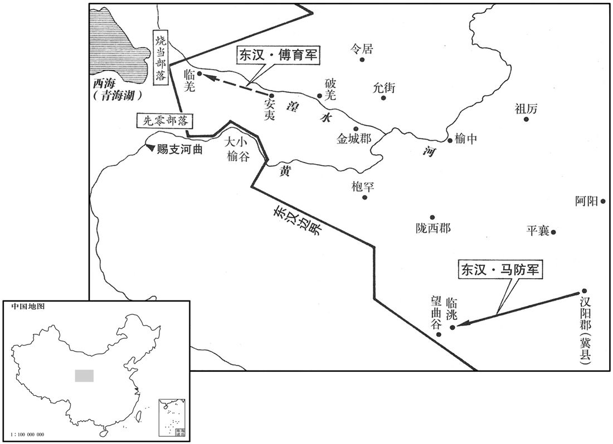
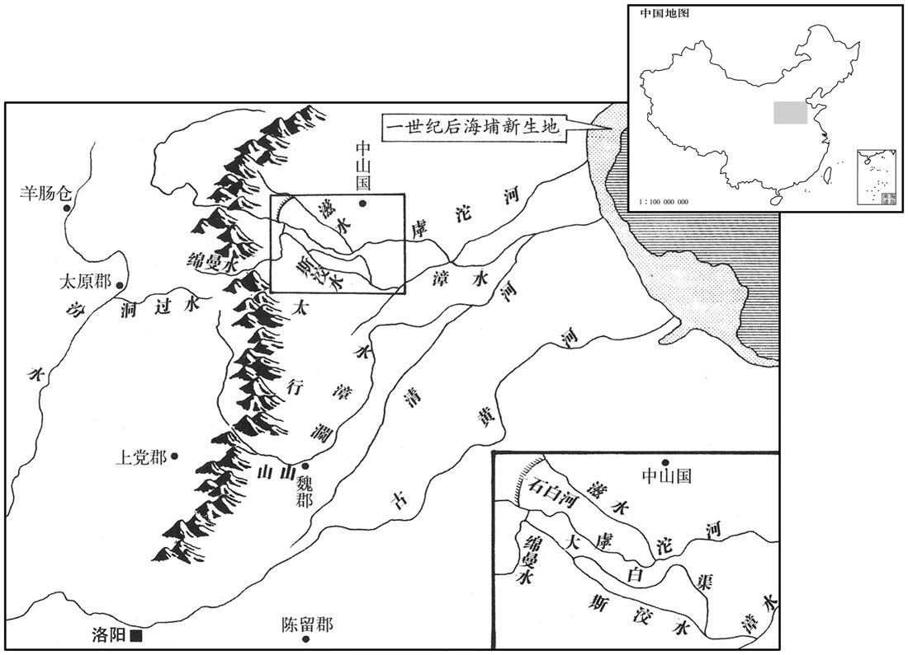

卷次与人物目录 / 卷46
资治通鉴 · 卷第四十六【汉纪三十八】
公元76年至公元84年 · 原文、白话与胡三省注
本页按胡注本编排保存全卷内容。白话采用本站所据译本，未可靠对应的内容另列说明；事件标题用于定位，并非原书文字。
本卷共86段原文，85段有译文对应，1段缺译或待核对。
卷第四十六【汉纪三十八】起柔兆困敦（丙子），尽阏逢涒滩（甲申），凡九年。
卷首原文与注释
肃宗孝章皇帝上〔讳炟，显宗第五子，母贾贵人，以马后母养为嫡，即位。谥法：温克令仪曰章。伏侯古今注：「炟」之字曰「着」。〕
公元76年 · 汉肃宗孝章皇帝建初元年
建初元年〔（丙子、七六）〕
本年事件索引（现代整理）
春，正月，诏兖、豫、徐三州禀赡饥民。上问司徒鲍昱：「何以消复旱灾﹖」〔消复者，消去灾异而复其常。〕对曰：「陛下始践天位，虽有失得，未能致异。臣前为汝南太守，典治楚事，〔贤曰：永平十三年，楚王英谋反，连坐者在汝南，昱时主劾之也。治，直之翻。〕系者千余人，死未能尽当其罪。夫大狱一起，冤者过半。又，诸徙者骨肉离分，孤魂不祀。宜一切还诸徙家，蠲除禁锢，使死生获所，则和气可致。」帝纳其言。
春季，正月，章帝下诏，命令兖州、豫州、徐州等三州官府开仓赈济饥饿的难民。章帝问司徒鲍昱：“怎样消除旱灾？”鲍昱答道：“陛下刚即位，即使有失当之处，也不会导致灾异出现。我先前曾任汝南太守，负责审理楚王之案，在当地拘禁了一千多人，这些囚犯恐怕不是全都有罪。大案一发，被冤枉者往往超过半数。此外，由于被流放的人和亲属分离，死后的孤魂得不到祭祀。我建议，让流放者全都返回家乡，除去不准作官的禁令，使死者生者各得其所，这样便可召致祥和之气，消除旱象。”章帝采纳了他的建议。
校书郎杨终上疏曰：「间者北征匈奴，西开三十六国，百姓频年服役，转输烦费；悉困之民足以感动天地，陛下宜留念省察！」〔汉兰台，藏书之室也；当时文学之士，使雠校于其中，故有校书之职，刘向、扬雄辈是也。东都于兰台置令史，典校秘书，以郎居其任者，谓之校书郎。终征诣兰台，拜校书郎。省，悉景翻。〕帝下其章，〔下，遐稼翻。〕第五伦亦同终议。牟融、鲍昱皆以为：「孝子无改父之道，〔引论语孔子之言。〕征伐匈奴，屯戌西域，先帝所建，不宜回异。」终复上疏曰：「秦筑长城，功复綮兴；胡亥不革，卒亡四海。〔事见秦纪。复，扶又翻。卒，子恤翻。〕故孝元弃珠箧之郡，〔事见二十八卷元帝初元二夫。〕光武绝西域之国，〔事见四十三卷光武建武二十三年。〕不以介鳞易我衣裳。〔贤曰：介鳞，喻远夷，其人与鱼鳖无异也。衣裳，谓中国也。扬雄法言曰：珠箧之绝，捐之之力也；否则介鳞易我衣裳。〕鲁文公毁泉台，春秋讥之曰：『先祖为之而毁之，不如勿居而已，』以其无妨害于民也；襄公作三军，昭公舍之，君子大其复古，以为不舍则有害于民也。〔舍，读日舍。〕今伊吾之役，楼兰之屯兵〔窦固等取伊吾，见上卷永平十六年。楼兰，即鄯善，此兵盖谓班超所将吏士也。〕久而未还，非天意也。」帝从之。
校书郎杨终上书说：“近年在北方讨伐匈奴，在西方开通三十六国，致使百姓连年服事徭役，转运繁巨而费用浩大。忧愁苦难的人民足以感动天地，陛下应当留意省察！”章帝将杨终的奏书下交群臣讨论。第五伦也同杨终的意见一致，而牟融、鲍昱都认为：“孝顺之子不改父亲的主张。讨伐匈奴、屯驻西域，都是先帝的决策，不应有所变化。”杨终再度上书说：“秦始皇修长城，工程浩大，徭役频征，胡亥不改前代政策，终于失去了天下。因此，孝元皇帝放弃了珠崖郡，光武皇帝拒绝了西域各国的归附，不能让鱼鳖去掉鳞甲，而穿上我们的衣服。春秋时，鲁文公拆毁了泉台，《春秋》讥讽道：‘先祖造台而子孙自毁台，还不如只留着它不去居住。’这是由于泉台的存在不会妨害人民。鲁襄公曾建立三军，而被鲁昭公裁撤，君子却赞扬他的复古举动，认为不裁撤便会妨害人民。如今在伊吾屯田和在楼兰驻防的士卒久不还乡，这不合上天之意。”章帝接受了他的意见。
丙寅，诏：「二千石勉劝农桑；罪非殊死，须秋按验。有司明慎选举，进柔良，退贪猾，顺时令，理冤狱。」是时承永平故事，吏政尚严切，尚书决事，率近于重。〔近，其靳翻。〕尚书沛国陈宠以帝新即位，宜改前世苛俗，乃上疏曰：「臣闻先王之政，赏不僭，刑不滥；与其不得已，宁僭无滥。〔左传蔡大夫声予之言。〕往者断狱严明，〔断，丁乱翻；下同。〕所以威惩奸慝；奸慝既平，必宜济之以宽。陛下即位，率由此义，数诏群僚，弘崇晏晏，〔贤曰：晏晏，温和也。尚书考灵耀曰：尧聪明文塞晏晏。数，所角翻。〕而有司未悉奉承，犹尚深刻；断狱者急于篣格酷烈之痛，〔贤曰：篣，即榜也，古字通用。声类曰：答也。说文曰：格，击也。〕执宪者烦于诋欺放滥之文，或因公行私，逞纵威福。夫为政犹张琴瑟，大弦急者小弦绝。〔贤曰：新序，臧孙，鲁大夫，行猛政。子贡非之曰：夫政犹张琴瑟也，大弦急则小弦绝矣，故曰：罚得则奸邪止，赏得则下欢悦。〕陛下宜隆先王之道，荡涤烦苛之法，轻薄垂楚以济群生，〔垂，止橤翻。〕全广至德以奉天心！」帝深纳宠言，每事务于宽厚。
正月丙寅（二十三日），章帝下诏：“二千石官员应大力劝勉百姓从事农耕和桑蚕之业，除非犯有该当斩首之罪，一切案件都等到秋后审理。各部门要审慎地任命官吏，提拔温和良善之士，排除贪婪奸滑的小人，顺应天时节令，清理冤案。”当时沿袭明帝旧制，官吏政风崇尚严苛，尚书所作裁决，大多从重。尚书沛国人陈宠认为，章帝新近即位，应当改革前代的这种严苛风气，便上书道：“我听说古代贤君为政，奖赏不过度，刑罚不滥施。在不得已时，宁可过度奖赏，也不滥施刑罚。以往官员判案严厉，因此能够以威力惩治奸恶；而在奸恶清除以后，就必应以宽厚相补。陛下即位以来，多根据这个宗旨行事，屡次诏告群臣，劝勉温和之政。然而有关官员未能完全顺承圣上的旨意，仍然追求苛刻。审案官急于采取严刑拷打的残酷手段，执法者则纠缠于肆意诬陷的文书，或假公济私，作威作福。执政就象琴瑟上弦，如果大弦太紧，小弦就会崩断。陛下应当发扬古代贤君的治国之道，清除那些繁琐苛刻的法令，减轻苦刑以拯救生命，全面推行德政以顺奉天心！”章帝将他的意见全部采纳，在处理政务时总是依据宽厚的原则。
酒泉太守段彭等兵会柳中，击车师，攻交河城，〔贤曰：前书，车师前王取交河城，河水分流绕城下，故号交河，去长安八千一百里，故城在今西州交河县。〕斩首三千八百级，获生口三千余人。北匈奴惊走，车师复降。〔复，扶又翻。〕会关宠已殁，谒者王蒙等欲引兵还；耿恭军吏范羌，时在军中，〔先是，恭遣羌至敦煌迎兵士寒服，因随王蒙军出塞。〕固请迎恭。诸将不敢前，乃分兵二千人与羌，从山北迎恭，遇大雪丈余，军仅能至。城中夜闻兵马声，以为虏来，大惊。羌遥呼曰：〔呼，火故翻。〕「我范羌也，汉遣军迎校尉耳。」〔校，户教翻。〕城中皆万岁。开门，共相持涕泣。明日，遂相随俱归。虏兵追之，且战且行，吏士素饥困。发疏勒时，尚有二十六人，随路死没，三月至玉门，〔贤曰：玉门，关名，属敦煌郡，在今沙州。臣贤按：酒泉郡又有玉门县，据东观记，曰至敦煌，明即玉门关也。〕唯余十三人，衣屦穿决，形容枯槁。中郎将郑众为恭以下洗沐，易衣冠，〔众先以军司马与马廖击车师，至敦煌，拜为中郎将。为，于伪翻。〕上疏奏：「恭以单兵守孤城，当匈奴数万之众，连月踰年，心力困尽，凿山为井，煮弩为粮，前后杀伤丑虏数百千计，卒全忠勇，〔卒，子恤翻。〕不为大汉耻，宜蒙显爵，以厉将帅。」〔将，即亮翻。帅，所类翻。〕恭至雒阳，拜骑都尉。诏悉罢戊、己校尉及都护官，〔二官明帝永平十七年置。〕征还班超。
酒泉郡太守段彭等人率军在柳中集结，进击车师，攻打交河城，斩杀三千八百人，俘虏三千余人。北匈奴惊慌而逃，车师再度投降。这时，关宠已经去世，谒者王蒙等人打算引兵东归。耿恭的一位军吏范羌当时正在王蒙军中，他坚持要求去救耿恭。将领们不敢前往，便分出两千救兵交给范羌。范羌经由山北之路去接耿恭，途中曾遇到一丈多深的积雪。援军精疲力尽，仅能勉强到达。耿恭等人夜间在城中听到兵马之声，以为匈奴来了援军，大为震惊。范羌从远处喊道：“我是范羌，汉朝派部队迎接校尉来了！”城中的人齐呼万岁。于是打开城门，大家互相拥抱，痛哭流涕。次日，他们便同救兵一道返回。北匈奴派兵追击，汉军边战边走。官兵饥饿已久，从疏勒城出发时，还有二十六人，沿途不断死亡，到三月抵达玉门时，只剩下了十三人。这十三人衣衫褴褛，鞋履洞穿，面容憔悴，形销骨立。中郎将郑众为耿恭及其部下安排洗浴，更换衣帽，并上书说：“耿恭以微弱的兵力固守孤城，抵抗匈奴数万大军，经年累月，耗尽了全部心力，凿山打井，煮食弓弩，先后杀伤敌人数以千计，忠勇俱全，没有使汉朝蒙羞。应当赐给他荣耀的官爵，以激励将帅。”耿恭到达洛阳后，被任命为骑都尉。章帝下诏，将戊校尉、己校尉和西域都护一并撤销，召班超回国。
超将发还，疏勒举国忧恐；其都尉黎弇曰：「汉使弃我，〔使，疏吏翻；下同。〕我必须为龟兹所灭耳，诚不忍见汉使去。」因以刀自刭。〔前书，疏勒国官有疏勒侯，击胡侯，辅国侯，都尉。复，扶又翻；下同。龟兹，音丘慈。〕超还至于窴，王侯以下皆号泣，〔窴，徒贤翻。号，户刀翻。〕曰：「依汉使奴父母，诚不可去！」〔使，疏吏翻。〕互抱超马脚不得行。超亦欲遂其本志，乃更还疏勒。疏勒两城已降龟兹，而与尉头连兵。〔前书，尉头国居尉头谷，去长安八千六百五十里，南与疏勒接。〕超捕斩反者，击破尉头，杀六百余人，疏勒复安。
班超将要运身返回，疏勒全国一片忧虑恐慌。疏勒都尉黎说：“汉朝使者抛弃我们，疏勒必定再次被龟兹毁灭，我真不忍见汉朝使者离去！”于是拔刀刎颈自杀。班超在归途中经过于阗，于阗王和贵族群臣全都号啕痛哭，说道：“我们依赖汉朝使者，犹如依赖父母，您确实不能走啊！”他们抱住班超的马腿，使他不能前进。班超也想实现自己本来的志愿，于是重新返回疏勒。这时疏勒已有两城投降了龟兹，并与尉头国结盟。班超逮捕斩杀了叛变者，打败尉头国，杀死六百余人。疏勒再度恢复安定。
甲寅，山阳、东平地震。
三月甲寅（十二日），山阳、东平两地发生地震。
东平王苍上便宜三事。〔上，时掌翻。〕帝报书曰：「间吏民奏事亦有此言；但明智浅短，或谓傥是，复虑为非，不知所定。得王深策，恢然意解；〔恢然，犹廓然也。〕思惟嘉谋，以次奉行。特赐王钱五百万。」后帝欲为原陵、显节陵起县邑，〔为，于伪翻。〕苍上疏谏曰：「窃见光武皇帝躬履俭约之行，深始终之分，〔行，下孟翻。分，扶问翻。〕勤勤恳恳，以葬制为言；〔事见四十四卷光武建武二十六年。〕孝明皇帝大孝无违，承奉遵行；〔事见上卷明帝永平十四年。〕谦德之美，于斯为盛。臣愚以园邑之兴，始自强秦。〔秦始皇葬于骊山，徙三万家，起骊邑；西汉因之，诸陵皆起陵邑，至元帝乃止。〕古者丘陇且不欲其着明，〔贤曰：礼记曰：古者墓而不坟，故言不欲其着明。〕岂况筑郭邑、建都郛哉！〔谷梁传曰：人之所聚曰都。杜预注左传曰：郛，郭也。〕上违先帝圣心，下造无益之功，虚费国用，动摇百姓，非所以致和气、祈丰年也。陛下履有虞之至性，〔虞舜孝于亲，故以无言。〕追祖祢之深思，臣苍诚伤二帝纯德之美不畅于无穷也！」帝乃止。自是朝廷每有疑政，辄驿使谘问，〔使，疏吏翻。〕苍悉心以对，皆见纳用。
东平王刘苍上书提出三项建议，章帝下诏答复说：“最近在官员和百姓的奏书中也有此类建议，但我见识才智浅薄，有时认为或许可行，后来又认为不可行，不知如何裁定。读到您深思熟虑写就的奏书，我心豁然开朗。我思考您的治国良策，依次实行。特别赏赐给您五百万钱。”后来，章帝打算在光武帝的原陵和明帝的显节陵两地设县，刘苍上书劝谏说：“我曾见光武皇帝亲身履行节俭的原则，他深明什么是生命之始与生命之终，恳切地指示丧葬后事。孝明皇帝大孝而不敢有所违背，遵从执行了父命。自谦的美德，这是最为盛大的了。我认为，在皇陵设邑这一制度的出现，始于强暴的秦朝。古代有墓无坟，连葬身的土垅都不要它显著突出地面，何况建立城市、修筑墙垣！上违先c帝的圣意，下造无用的工程，白白浪费国家资财，使百姓不得安宁，这不是招致祥和之气、祈求丰年的作法。望陛下履行虞舜的至孝，追念先人的深意。我实在担忧两位先帝的纯洁美德不能够永久流传！”章帝这才作罢。从此，每当朝廷遇到疑难，就派使者乘坐驿车前往咨询，刘苍则尽心答复。他的意见，全都被采纳实施。
秋，八月，庚寅，有星孛于天市。〔晋天文志：参十星，一曰天市；又危三星，亦为天市。又天市垣二十二星在房、心东北。史记曰：房为天驷；东北十二星曰旗，中四星曰天市。孛，蒲内翻。〕
秋季，八月庚寅（二十日），天市星座出现异星。
初，益州西部都尉广汉郑纯，为政清洁，化行夷貊，君长感慕，皆奉珍内附；〔貊，莫百翻。长，知两翻。〕明帝为之置永昌郡，〔明帝永平十年，置益州西部都尉，居巂唐，领不韦、巂唐、比苏、楪榆、邪龙、云南六县。十二行，哀牢内属，置哀牢、博南二县，合为永昌郡。为，于伪翻。〕以约为太守。约在官十年而卒。〔守，式又翻。卒，子恤翻。〕后人不能抚循夷人，九月，哀牢王类牢杀守令反，攻博南。
先前，益州西部都尉、广汉人郑纯为政清廉，教化夷人貊人。夷人貊人首领对他十分敬慕，全都献上珍宝，归附汉朝。明帝在当地设立了永昌郡，任命郑纯为太守。郑纯在任十年去世。后任太守不能安抚夷人，到本年九月，哀牢王类牢杀死郡县长官反叛，进攻博南。
阜陵王延数怀怨望，〔数，所角翻。〕有告延兴子男鲂造逆谋者；〔鲂，音房。〕上不忍诛，冬十一月，贬延为阜陵侯，食一县，不得与吏民通。〔延徙王阜陵事见上卷明帝永平十六年。〕
阜陵王刘延屡屡心怀不满，有人告发他与儿子刘鲂密谋造反。章帝不忍将刘延处死，冬季十一月，将他贬为阜陵侯，只享有一个县的封地，不许他与官员人民来往。
北匈奴皋林温禺犊王将众还居涿邪山，南单于与边邵及乌桓共击破之。〔皋林温禺犊王本居涿邪山，永平十六年，祭肜等北伐，将众遁去，今复还。〕是岁，南部次〔【章：甲十六行本「次」作「大」；乙十一行本同；孔本同；熊校同。】〕饥，诏禀给之
北匈奴皋林温禺犊王率领部众返回涿邪山居住。南匈奴单于和汉朝边境郡兵及乌桓部落一同出击，将北匈奴打败。本年，南匈奴发生饥荒，章帝下诏为南匈奴供应粮食。
公元77年 · 汉肃宗孝章皇帝建初二年
二年〔（于丑、七七）〕
本年事件索引（现代整理）
春，三月，甲辰，罢伊吾卢屯兵，屯奴复遣兵守其地。〔伊吾卢置屯兵事见上卷永平十六年。复，扶又翻。〕
春季，三月甲辰（初八），撤销在西域伊吾卢的屯田部队。于是北匈奴再度派兵占领该地。
永昌、越巂、益州三郡兵及昆明夷卤承等击哀牢王类牢于博南，大破，斩之。〔巂，音髓。〕
永昌、越、益州三郡郡兵及昆明夷人卤承等在博南进攻哀牢王类牢，大败哀牢军，斩杀类牢。
夏，四月，戊子，诏还坐楚、淮阳事徙者四百余家。〔楚狱见上卷明帝永平十四年。淮阳狱，即阜陵王延徙封时也。〕
夏季，四月戊子（二十二日），章帝下诏，准许因楚王之案、淮阳王之案而被流放的四百余户返回故乡。
上欲封爵诸舅，太后不听。会旱，言事者以为不封外戚之故，有司请依旧典。〔贤曰：汉制，外戚以恩泽封侯，故曰旧典。〕太后诏曰：「凡言事者，皆欲媚朕以要福耳。〔要，一遥翻。〕昔王氏王侯同日俱封，黄雾四塞，〔事见三十卷成帝建始元年。塞，悉则翻。〕不闻澍雨之应。〔澍，音注。〕夫外戚贵盛，鲜不倾覆；〔鲜，息浅翻。〕故先帝防慎舅氏，不令在枢机之位，又言『我子不当与先帝子等』，〔事见上卷永平十五年。〕今有司柰何欲以马氏比阴氏乎！且阴卫尉，天下称之，省中御者至门，出不及履，此蘧伯玉之敬也；〔卫尉，兴也。省中，禁中也。御者，内人也。蘧伯玉，卫贤大夫。蘧，求于翻。〕新阳侯虽刚强，微失理，然有方略，据地谈论，一朝无双；〔新阳侯，就也。贤曰：新阳县属汝南郡，故城在今豫州真阳县西南。〕原鹿贞侯，勇猛诚信；〔原鹿侯，识也。原鹿县，属汝南郡。〕此三人者，天下选臣，岂可及哉！马氏不及阴氏远矣。吾不才，夙夜累息，〔息，气一出入之顷；屏气者累息乃一舒气。〕常恐亏先后之法，有毛发之罪吾不释，言之不舍昼夜而亲属犯之不止，治丧起坟，又不时觉，〔治，直之翻。〕是吾言之不立而耳目之塞也。〔塞，悉则翻。〕
章帝打算赐封各位舅父，但马太后不同意。适逢天旱，有人上书说是因为未封外戚的缘故，于是有关部门奏请依照旧制赐封。马太后下诏说：“那些上书建议封外戚的人，都是要向朕献媚，以谋求好处罢了。从前，王氏家族一日之内有五人一起封侯，而当时黄雾弥漫，并未听说有天降好雨的反应。外戚富贵过盛，很少不倾覆的。所以先帝对他的舅父慎重安排，不放在朝廷要位，还说：‘我的儿子不应与先帝的儿子等同。’如今有关部门为什么要将马家同阴家相比呢！况且卫尉阴兴，受到天下人的称赞，宫中的使者来到门前，他连鞋都来不及穿，便急忙出迎，如同蘧伯玉一样恭敬有礼；新阳侯阴就，虽然性格刚强，略失规矩，然而胸有谋略，以手撑地，坐着发表议论，朝中无人能与他相比；原鹿贞侯阴识，勇敢忠诚而有信义。这三个人都是天下群臣中的出类拔萃者，难道能比得上吗！马家比阴家差远了。我没有才干，日夜因恐惧而喘息不安，总怕有损先后订立的法则。即便是细小的过失，我也不肯放过，日夜不停地告诫。然而我的亲属们仍然不断犯法，丧葬时兴筑高坟，又不能及时察觉错误，这表明我的话没有人听，我的耳目已被蒙蔽。
吾为天下母，而身服大练，〔贤曰：大练，大帛也。杜预注左传曰：大帛，厚缯也。〕食不求甘，左右但着帛布，无香熏之饰者，欲身率下也。〔着，侧略翻。〕以为外亲见之，当伤心自敕；但笑言『太后素好俭』。〔好，呼到翻。〕前过濯龙〔续汉志：濯龙，园名，近北宫。〕门上，见外家问起居者，车如流水，马如游龙，仓头衣缘転，领袖正白，〔贤曰：転，臂衣。今之臂転，以缚左右手，于事便也。余据字书，臂踈之踈从革，転此从衣，释单衣也，皆音古侯翻。领袖正白，言其新洁无垢污也。衣，于既翻。〕顾视御者，不及远矣。故不加谴怒，但绝岁用而已，冀以默愧其心；犹懈怠无忧国忘家之虑。〔懈，古隘翻。〕知臣莫若君，况亲属乎！吾岂可上负先帝之旨，下亏先人之德，重袭西京败亡之祸哉！」〔贤曰：西京外戚，吕禄、吕产，窦婴，上官桀、安父子，霍禹等皆被诛。重，直龙翻。〕固不许。
“我身为天下之母，然而身穿粗丝之服，饮食不求香甜，左右随从之人只穿普通帛布，不使用熏香饰物，目的就是要亲身做下面的表率。本以为娘家人看到我的行为当会痛心自责，但他们只是笑着说‘太后一向喜爱节俭’。前些时候，我经过濯龙门，看见那些到我娘家问候拜访的人们，车辆如流水不断，马队如游龙蜿蜒，奴仆身穿绿色单衣，衣领衣袖雪白。回视我的车夫，差得远了。我所以对娘家人并不发怒谴责，而只是裁减每年的费用，是希望能使他们内心暗愧。然而他们仍然懈怠放任，没有忧国忘家的觉悟。了解臣子的，莫过于君王，更何况他们是我的亲属呢！我难道可以上负先帝的旨意，下损先人的德行，重蹈前朝外戚败亡的灾祸吗！”她坚持不同意赐封。
帝省诏悲叹，复重请曰：〔省，悉景翻。复，扶又翻。重，直用翻。〕「汉兴，舅氏之封侯，犹皇子之为王也。太后诚存谦虚，柰何令臣独不加恩三舅乎！且卫尉年尊，两校尉有大病，〔卫尉，太后兄廖；两校尉，兄防、兄光也。校，户教翻。〕如令不讳，使臣长抱刻骨之恨。宜及吉时，不可稽留。」〔汉封爵群臣皆涓吉。〕太后报曰：「吾反复念之，思令两善，〔两善，谓国家无滥恩，而外戚亦以安全也。〕岂徒欲获谦让之名而使帝受不外施之嫌哉！〔以恩泽封爵外家为外施也。施，式智翻。〕昔窦太后欲封王皇后之兄，丞相条侯言：『高祖约，无军功不侯。』〔事见十六卷景帝中三年。〕今马氏无功于国，岂得与阴、郭中兴之后等邪！常观富贵之家，禄位重迭，犹再实之木，其根必伤。〔文子：日再实之木根必伤，掘臧之家后必殃。重，直龙翻。〕且人所以愿封侯者，欲上奉祭祝，下求温饱耳；今祭祀则受太官之赐，衣食则蒙御府余资，〔自西都以来，皇后家祀其父母，太官供具。御府令，掌中衣服及补澣之属；饮食则太官主之。此言衣食皆资于御府，概言之心。〕斯岂不可足，而必当得一县乎！吾计之孰矣，〔古字孰熟通。〕勿有疑也！
章帝看到马太后的诏书后悲哀叹息，再次请求道：“自从汉朝建立，舅父封侯，犹如皇子为王，乃是定制。太后固然存心谦让，却为何偏偏使我不能赐恩给三位舅父！而且卫尉马廖年老，城门校尉马防、越骑校尉马光身患大病，如果发生意外，将使我永怀刻骨之憾。应当趁着吉时赐封，不可延迟。”太后回答说：“我反复考虑此事，希望能对国家和马氏双方有益，难道只是想博取谦让的名声，而让皇帝蒙受不施恩于外戚的怨恨吗？从前窦太后要封王皇后的哥哥，丞相条侯周亚夫进言：‘高祖有规定，无军功者不得封侯。’如今马家没有为国立功，怎能与阴家、郭家那些建武中兴时期的皇后家相等呢！我曾观察那些富贵之家，官位爵位重迭，如同一年之中再次结果的树木，它的根基必受损伤。况且人们所以愿封为侯，不过是希望上能以丰足的供物祭祀祖先，下能求得衣食的温饱罢了。如今皇后家的祭祀由太官供给，衣食则享受御府的剩余之物，这难道还不够，而定要拥有一县的封土吗？我已深思熟虑，你不要再有疑问！
夫至孝之行，安亲为上。〔扬子曰：孝莫大于宁亲，宁亲莫大于四表之驩心。行，下孟翻。〕今数遭变异，〔数，所角翻。〕谷价数倍，忧惶昼夜，不安坐卧，而欲先营外家之封，违慈母之拳拳乎！〔贤曰：拳拳，犹勤勤也，音权。〕吾素刚急，有匈中气，不可不顺也。〔匈中气，今所谓上气之疾。匈，与胸同。〕子之未冠，由于父母，已冠成人，则行子之志。〔冠，古玩翻。〕念帝，人君也；吾以未踰三年之故，自吾家族，故得专之。若阴阳调和，边境清静，然后行子之志；吾但当含饴弄孙，〔方言曰：饴，饧也，宋、卫之间通语。〕不能复关政矣。」〔关，豫政也。复，扶又翻。〕上乃止。
“儿女孝顺，最好的行为是使父母平安。如今不断发生灾异，谷价上涨数倍，我日夜忧愁惶恐，坐卧不安，而皇帝却打算先为外戚赐封，违背慈母的拳拳之心！我平素刚强性急，胸有气痛之症，不可以不顺气。儿子未成年，听从父母的教导，成年以后，则按照自己的意愿行事。我想，你是皇帝，人之君主，当然可以自行其是。但我因你尚未超过三年的服丧期，又事关我的家族，故此专断裁决。如果天地阴阳之气调和，边境宁静无事，此后你便可以按照自己的意愿行事，而我则只管含糖逗弄小孙，不再干预政事。”章帝这才放弃了这一打算。
太后尝诏三辅：诸马婚亲有属托郡县、干乱吏治者，以法闻。〔绳之以法而奏闻也。属，之欲翻。治，直吏翻。〕太夫人葬起坟微高，〔太夫人，太后母也。汉列侯坟高四丈，关内侯以下至庶人有差。〕太后以为言，兄卫尉廖等实时减削。其外亲有谦素义行者，〔行，下孟翻。〕辄假借温言，赏以财位；如有纤介，则先见严恪之色，〔见，贤遍翻。〕然后加谴。其美车服、不遵法度者，便绝属籍，遣归田里。〔绝外戚之属籍也。〕广平、巨鹿、乐成王，车骑朴素，无金银之饰，〔广平王羡，巨鹿王恭，乐成王党，皆明帝子。〕帝以白太后，即赐钱各五百万。于是内外从化，被服如一；〔被，皮义翻。〕诸家惶恐，倍于永平时。置织室，蚕于濯龙中，〔续汉志：濯龙监，属钩盾令。本注曰：渥龙，亦园名，近北宫。〕数往观视，以为娱乐。〔数，所角翻。乐，音洛。〕常与帝旦夕言道政事及教授小王论语经书，〔小王，诸王年尚幼，未就国者。〕述叙平生，雍和终日。
太后曾对三辅下诏：“马氏家族及其亲戚，如有因请托郡县官府，干预扰乱地方行政的，应依法处置、上报。”马太后的母亲下葬时堆坟稍高，马太后对此提出反对意见，她的哥哥卫尉马廖等人就立即将坟减低。在马家亲属和亲戚中，有行为谦恭正直的，马太后便以温言好语相待，赏赐财物和官位。如果有人犯了微小的错误，马太后便首先显出严肃的神色，然后加以谴责。对于那些车马衣服华美、不遵守法律制度的家属和亲戚，马太后就将他们从皇亲名册中取消，遣送回乡。广平王刘羡、钜鹿王刘恭和乐成王刘党，车马朴素无华，没有金银饰物。章帝将此情况报告了太后，太后便立即赏赐他们每人五百万钱。于是内外亲属全都接受太后的教导和影响，一致崇尚谦逊朴素。外戚家族惶恐不安，超过了明帝时期。马太后曾设立织室，在濯龙园中种桑养蚕，并频频前往查看，把这当成一项娱乐。她经常与章帝早晚在一起谈论国家大事，教授年幼的皇子读《论语》等儒家经书，讲述平生经历，终日和睦欢洽。
马廖虑美业难终，上疏劝成德政曰：「昔元帝罢服官，〔事见二十八卷初元五年。〕成帝御浣衣，〔言服浣濯之衣也。〕哀帝去乐府，〔事见三十三卷绥和二年。去，羌吕翻。〕然而侈费不息，至于衰乱者，百姓从行不从言也。〔书曰：违上所命，从厥攸好。行，下孟翻。〕夫改政移风，必有其本。传曰：『吴王好剑客，百姓多创瘢；〔传，直恋翻。创，初良翻。瘢，蒲官翻，痕也。好剑客，盖指吴阖闾木。〕楚王好细腰，宫中多饿死。』〔墨子曰：楚灵王好细腰，而国多饿人。〕长安语曰：〔贤曰：当时谚语。〕『城中好高结，四方高一尺；〔结，读曰髻。〕城中好广眉，四方且半额；城中好大袖，四方全匹帛。』斯言如戏，有切事实。前下制度未几，后稍不行；〔未几，言未几时也。几，居岂翻。〕虽或吏不奉法，良由慢起京师。今陛下素简所安，发自圣性，〔贤曰：言俭素简约，后之所安。〕诚令斯事一竟，〔竟，犹终也。〕则四海诵德，声熏天地，〔贤曰：熏，犹蒸也，言芳声熏天地也。〕神明可通，况于行令乎！」太后深纳之。
马廖担心马太后倡导的美好的事情难以持久，上书劝太后完成德政。他说：“从前元帝取消服官，成帝穿用洗过的衣袍，哀帝撤除乐府，然而奢侈之风不息，最终导致衰落而发生动乱的原因，就在于百姓跟随朝廷所行，而不听信朝廷所言。改变政风民风，一定要从根本着手。经传说：‘吴王好剑客，百姓多伤疤；楚王好细腰，宫中多饿死。’长安有谚语说：‘城中喜爱高发髻，乡下的发髻高一尺；城中喜爱宽眉毛，乡下的眉毛半前额；城中喜爱大衣袖，乡下的衣袖用了整匹帛。’这些话有如戏言，但切近事实。前些时候，朝廷颁布制度后没有多久，便有些推行不下去了，虽然这或许是由于官吏不遵奉法令，但实际上是由于京城率先怠慢。如今陛下安于俭朴的生活，是出自神圣的天性，假如能将此坚持到底，那么天下人都要称诵道德，美好的名声将传遍天地，同神灵都可以相通，何况是推行法令呢！”太后认为他的话很正确，全部采纳。
初，安夷县吏略妻卑湳种羌人妇，〔安夷县属金城郡。杜预曰：不以道取曰略。湳，乃感翻。种，章勇翻；下同。〕吏为其夫所杀，安夷长宗延追之出塞。〔长，知两翻。〕种人恐见诛，遂共杀延而与勒姐、吾良二种相结为寇。〔勒姐羌居勒姐溪，因以为种名。〕于是烧当羌豪滇吾之子迷吾率诸种俱反，〔姐，子也翻，又音紫。滇，音颠。〕败金城太守郝崇。〔败，补万翻。郝，呼各翻；姓谱：殷帝乙有子期，封太原郝乡，后因氏焉。〕诏以武威太守北地傅育为护羌校尉，自安夷徙居临羌。〔临羌县，属金城郡。杜佑曰：临羌在今西平郡。水经注：湟水东合安夷川水，又东径安夷县，故城在汉西平亭东七十里。湟水又东合勒姐溪水。〕迷吾又与封养种豪布种等五万余人共寇陇西、汉阳。〔本天水郡，明帝永平十七年，改名汉阳。〕秋，八月，遣行车骑将军马防、长水校尉耿恭将北军五校兵〔武帝置北军八校，中垒、屯骑、越骑、长水、胡骑、射声、步兵、虎贲也；中兴，省中垒、胡骑、虎贲，惟越骑、屯骑、步兵、长水、射声五交。屯骑、越骑、步兵、射声各领士七百人，长水领乌桓胡骑七百三十六人，皆宿卫兵也。〕及诸邵射士三万人击之。〔马防传云：积射士。〕第五伦上疏曰：「臣愚以为贵戚可封侯以富之，不当任以职事。何者﹖绳以法则伤恩，私以亲则违宪。伏闻马防今当西征，臣以太后恩仁，陛下至孝，恐卒有纤介，难为意爱。」〔贤曰：死卒然有小过，爱而不罚，则废法也。卒，读曰猝。〕帝不从。
起初，安夷县有官吏强抢羌人卑部落的妇女为妻，被那个妇女的丈夫杀死。安夷县长宗延追捕凶手，直至塞外。该部落的羌人害怕受到处罚，就一同杀掉宗延，而与勒姐、吾良两个部落联合，起兵叛变。在此形势下，烧当羌人部落首领滇吾的儿子迷吾便率领各部落一同造反，打败了金城太守郝崇。章帝下诏，任命武威太守北地人傅育为护羌校尉，由安夷迁往临羌。迷吾又和封养部落首领布桥等集结五万余人，一同进攻陇西、汉阳二郡。秋季，八月，章帝派代理车骑将军马防和长水校尉耿恭率领北军的越骑、屯骑、步兵、长水、射声等五校兵以及各郡的弓弩射手，共三万人，讨伐羌人。第五伦上书说：“我认为，对于皇亲国戚，可以封侯使他们富有，但不应当委派职务。这是为什么呢？因为他们若是有了过失，以法制裁就会伤害感情，以亲徇私就会违背国法。听说马防如今将要率军西征，我认为，太后恩德仁慈，皇上至为孝顺，如果突然有了小差错，怕将难以维护亲情。”章帝不采纳他的意见。

马防等军到冀，布桥等围南部都尉于临洮，〔前书，陇西南部都尉治临洮。贤曰：即今岷、洮二州地。〕防进击，破之，斩首虏四千余人，遂解临洮围；其众皆降，唯布桥等二万余人屯望曲谷不下。〔郦道元注水经云：望曲在临洮西南，去龙桑城二百里。〕
马防等人的部队到达冀县时，布桥正率羌军在临洮围攻南部都尉。马防发动进攻，打败了布桥，斩杀、俘虏四千余人，于是临洮解围。羌军全部投降，只剩下布桥等二万余人，盘踞在望曲谷，未被攻克。
十二月，戊寅，有星孛于紫宫。〔晋天文志：中宫，北极五星，钩陈六星，皆在紫宫中。紫宫垣十五星，其西蕃七，东蕃八。孛，蒲内翻。〕
十二月戊寅（十六日），紫宫星座出现异星。
帝纳窦勋女为贵人，有宠。〔为后诸窦窃权张本。〕贵人母，即东海恭王女沘阳公主也。〔沘，音比。〕
章帝将窦勋的女儿选为贵人，十分宠幸。窦贵人的母亲，就是东海恭王刘强的女儿阳公主。
第五伦上疏曰：「光武承王莽之余，颇以严猛为政，后代因之，遂成风化；郡国所举，类多办职俗吏，殊未有宽博之选以应上求者也。陈留令刘豫，冠军令驷协，〔陈留县，属陈留郡。冠军县，属南阳郡。冠，古玩翻。〕并以刻薄之姿，务为严苦，吏民愁怨，莫不疾之。而今之议者反以为能，违天心，失经义；非徒应坐豫、协，亦宜谴举者。务进仁贤以任时政，不过数人，则风俗自化矣。臣尝读书记，知秦以酷急亡国，又目见幵莽亦以苛法自灭，故勤勤恳恳，实在于此。又闻诸王、主、贵戚，骄奢踰制，京师尚然，何以示远！故曰：『其身不正，虽令不行，』〔论语孔子之言。〕以身教者从，以言教者讼。」上善之。伦虽天性峭直，〔贤曰：峭，峻也，音七笑翻。〕然常疾俗吏苛刻，论议每依宽厚云。
第五伦上书说：“光武帝继承王莽以后的局面，为政多采用严厉手段，后代沿袭，便成为风气。各郡各封国所举荐的人，多属只会应付公务的庸官，绝少宽宏博学之才，以满足朝廷的需求。陈留县令刘豫和冠军县令驷协，全都作风刻薄，务求严苛，使官民忧伤哀怨，无不痛恨他们。然而如今的舆论，反而认为他们有能力，这是违反天意，背离经书的义理。不仅应对刘豫、驷协加以惩处，还应谴责那些保举他们的人。一定要提拔任用仁慈贤能者为政，不过几个人，而风气自会转化。我曾阅读史书，知道秦朝由于残酷暴虐而亡国，又亲眼看见王莽新朝也因法令苛刻而自行毁灭。我所以恳切地上书劝谏，原因就在于此。我还听说诸亲王、公主和外戚骄傲奢侈超过了规定，京城尚且这样，如何做外地的榜样！所以孔子说：‘自身不正，虽有令而不被执行。’以身为教，众人跟从；以言为教，众人争讼。”章帝对他的意见表示赞许。第五伦虽然天性严厉梗直，却常常痛恨庸俗官吏的苛刻。他的政论，总是以宽厚为其原则。
公元78年 · 汉肃宗孝章皇帝建初三年
三年〔（戊寅、七八）〕
春，正月，己酉，宗祀明堂，登灵台，赦天下。
春季，正月己酉（十七日），章帝在明堂祭祀列祖列宗。登上灵台，观察天象。大赦天下。
马防击布桥，大破之，〔考异曰：帝纪，防破羌在四月。盖春破而京师四月始闻也。今从防传。〕布桥将种人万余降，诏征防还。留耿恭击诸未服者，斩首虏千余人，勒姐、烧何等十三种数万人，皆诣恭降。〔姐，音紫，又子也翻。种，章勇翻。〕恭尝以言事忤马防，〔初，恭出陇西，上言荐窦固镇抚凉部，由是大忤于防。忤，五故翻。〕监营谒者承旨，奏恭不忧军事，坐征下狱，免官。〔监，古衔翻。下，遐稼翻。〕
马防进攻布桥，布桥大败，率领部众一万余人投降。章帝下诏，命令马防回朝。留下耿恭讨伐那些尚未归顺的部落，斩杀俘虏了一千余人。于是，勒姐、烧何等十三个部落共数万羌人，全部向耿恭投降。耿恭曾因上书奏事冒犯过马防，监军谒者便秉承马防的意思，弹劾耿恭不留意军事。耿恭因罪被召回，逮捕入狱，免去官职。
三月，癸巳，立贵人窦氏为皇后。
三月癸巳（初二），将贵人窦氏立为皇后。
初，显宗之世，治虖沱、石臼河，从都虑至羊赐仓，〔贤曰：石臼河，在今定州唐县东北。郦道元注水经云：汾阳故城积粟所在，谓之羊肠仓，在晋阳西北；石帯萦纡，若羊赐焉，故以为名。今岚州界羊肠是也。唐岚州宜芳县，本汉汾阳县，隋置岚城县，唐更名宜芳。杜佑曰：宜芳县有古秀容城，汉羊肠仓。余考水经注云：按司马彪郡国志，常山南行唐县有石臼谷，盖欲乘呼沱之水，转山东之漕，自都虑至羊肠仓，戚汾水以漕太原。又考郡国志，常山蒲吾县注引古今注曰：永平十年，作常山呼沱河蒲吾渠通漕船。又考班固地理志，太原郡上艾县注曰：绵曼水东至蒲吾入呼沱水。又蒲吾县注曰：大白渠水首受绵曼水，东南至下曲阳入斯洨。则知此漕自大白渠入绵曼水，自绵曼水转入汾水以达羊肠仓也。虑，音闾，杜佑曰：石臼河，在定州唐昌县。唐昌，汉苦陉县也。〕欲令通漕。太原吏民苦役，连年无成，死者不可胜算。〔胜，音升。〕帝以郎中邓训为谒者，监领其事。训考虑隐括，〔贤曰：隐审量括之也。孙卿子曰：钩木必待隐括蒸揉，然后直也。监，古衔翻。量，音良。〕知其难成，具以上言。〔上，时掌翻。〕夏，四月，己巳，诏罢其役，更用驴辇，〔更，工衡翻。〕岁省费亿万计，全活徒士数千人。训，禹之子也。
当初，明帝时曾经治理过滹沱河和石臼河，打算让都虑到羊肠仓两地通航，以运送漕粮。工程艰巨，太原的官吏和百姓苦于徭役，连年不能完工，死亡者不可胜数。章帝任命中郎将邓训为谒者，主持这一工程。邓训经过考察测量，明白此事难以完成，便将实情一一奏报。本年夏季，四月己巳（初九），章帝下诏，撤销该项工程，改用驴车运粮。停工以后，每年节省开支以亿万计，得以活命的役夫有数千人。邓训是邓禹之子。
闰月，西域假司马班超率疏勒、康居、于窴、拘弥兵一万人攻姑墨石城，破之，〔前书，姑墨国治南城，去长安八千一百五十里。〕斩首七百级。
闰九月，西域副司马班超率领疏勒、康居、于阗、拘弥等国军队，共一万人，进攻姑墨国石城，将石城攻破，斩杀七百人。
冬，十二月，丁酉，以马防为车骑将军。
冬季，十二月丁酉（十一日），任命马防为车骑将军。

武陵
本段缺少可靠对应白话，原文完整保留；未使用生成译文。
是岁，有司奏遣广平王羡、巨鹿王恭、乐成王党俱就国；上性笃爱，不忍与诸王乖离，遂皆留京师。
本年，有关部门上奏，请派遣广平王刘羡、钜鹿王刘恭、乐成王刘党一同前往他们的封国就位。章帝因手足情深，不忍心与诸亲王分离，便将他们全都留在京城。
译本中未与胡注本可靠对应的内容
以下另列供核对版本差异，不并入胡注本正文。
译本所附古文
[7]武陵中蛮反。
译本白话
武陵郡中蛮人反叛。
公元79年 · 汉肃宗孝章皇帝建初四年
四年〔（己卯、七九）〕
本年事件索引（现代整理）
春，二月，庚寅，太尉牟融薨。
春季，二月庚寅（初五），太尉牟融去世。
夏，四月，戊子，立皇子庆为太子。
夏季，四月戊子（初四），将皇子刘庆立为太子。
己丑，徙巨鹿王恭为江陵王，汝南王阳为梁王，常山王为淮阳王。
四月己丑（初五），章帝将钜鹿王刘恭改封为江陵王，汝南王刘畅改封为梁王，常山王刘改封为淮阳王。
辛卯，封皇子伉为千乘王，全为平春王。〔平春县，属江夏郡。伉，音抗。乘，绳证翻。〕
四月辛卯（初七），章帝将皇子刘伉封为千乘王，皇子刘全封为平春王。
有司连据旧典，请封诸舅；帝以天下丰稔，方垂无事，癸卯，遂封卫尉廖为顺阳侯，〔顺阳侯国，属南阳郡。贤曰：故城在今邓州穰县西。〕车骑将军防为颍阳侯，〔颍阳县，属颍川郡。〕执金吾光为许侯。〔许县，属颍川郡。〕太后闻之曰：「吾少壮时，但慕竹帛，志不顾命。〔贤曰：言慕古人书名竹帛，不顾命之长短。少，诗沼翻。〕今虽已老，犹戒之在得，〔论语：孔子曰：及其老也，戒之在得。〕故日夜惕厉，〔惕，惧也；厉，危也。〕思自降损，冀乘此道，不负先帝。所以化导兄弟，共同斯志，欲令瞑目之日，无所复恨，何意老志复不从哉！〔瞑，莫定翻。复，扶又翻。〕万年之日长恨矣！」廖等并辞让，愿就关内侯，〔考异曰：皇后纪称「廖等并辞让，愿就关内侯，太合闻之云云；廖等不得已受封爵。」按太后之辞，皆不欲封廖等之意，而史家文势，反似太后欲令廖等受封。今辄移廖等辞让于太后语下，使文势有序，读者易解。〕帝不许。廖等不得已受封爵而上书辞位，帝许之。五月，丙辰，防、廖、光皆以特进就。
有关部门接连以旧制为依据，请章帝赐封各位舅父。章帝因全国丰收，四方边境太平无事，四月癸卯（十九日），便将卫尉马廖封为顺阳侯，将车骑将军马防封为颍阳侯，将执金吾马光封为许侯。太后听到消息后说：“我年轻的时候，只羡慕古人留名史册，心中不顾惜性命。如今虽已年老，仍然告诫自己不要贪得无厌。我所以日夜警惕，想自我贬损，是希望遵循这一宗旨，不辜负先帝。因此我劝导兄弟，共守此志，要使闭目身死之日，不再遗憾。不料我这老人的心愿不再被遵从！身死之日，我将永怀长恨了！”马廖等人一同辞让，愿降为关内侯，但章帝不许。马廖等人不得已而接受了封爵，但又上书请求辞去官职，章帝应允。五月丙辰（初二），马防、马廖、马光都以特进身份离开朝廷，前往邸第。
甲戌，以司徒鲍昱为太尉，南阳太守桓虞为司徒。
五月甲戌（二十日），将司徒鲍昱任命为太尉，将南阳太守桓虞任命为司徒。
六月，癸丑，皇太后马氏崩。帝既为太后所养，专以马氏为外家，故贾贵人不登极位，贾氏亲族无受宠荣者。及太后崩，但加贵人王赤绶，〔汉制：贵人绿绶，三采绿、紫、绀，长二丈一尺，二百四十首；诸侯赤绶，四采赤、黄、缥、绀、长二丈一尺，三百首。〕安车一驷，永巷宫人二百，〔贤曰：永巷宫人，宫婢也。〕御府杂帛二万匹，大司农黄金千斤，钱二千万而已。
六月癸丑（三十日），皇太后马氏驾崩。章帝被马太后抱养以后，只认马氏家族为外家，所以章帝的生母贾贵人不能登御太后之位，贾氏家族没有一人蒙受恩宠荣耀。及至太后驾崩，章帝只将贾贵人的绿色绶带改为与诸侯王同级的红色绶带，并赐四马牵拉的座车一辆，永巷宫女二百人，御府各色丝绸二万匹，大司农所藏黄金一千斤，钱两千万，如此而已。
秋，七月，壬戌，葬明德皇后。〔贤曰：谥法：中和纯淑曰德。〕
秋季，七月壬戌（初九），安葬马太后。
校书郎杨终建言：「宣帝博征群儒，论定五经于石渠阁。〔事见二十七卷甘露三年。〕方今天下少事，〔少，诗沼翻。〕学者得成其业，而章句之徒，破坏大体。〔坏，音怪。〕宜如石渠故事，永为后世则。」帝从之。冬，十一月，壬戌，诏太常：〔句断。〕「将、大夫、博士、郎官及诸儒会白虎观，议五经同异。」〔将，即亮翻。将，三署及虎贲、羽林中郎将也。大夫，光禄、太中、中散、谏议大夫也。博士，五经博士也。郎官，五署郎及尚书郎、兰台、东观校书郎也。白虎观在北宫。观，古玩翻。〕使五官中郎将魏应承制问，侍中淳于恭奏，帝亲称制临决，作白虎议奏，名儒丁鸿、楼望、成封、桓郁、班固、贾逵及广平王羡皆焉。固，超之兄也。〔与，读曰预。〕
校书郎杨终建议：“宣帝曾广召儒生，在石渠阁讨论儒家《五经》��《诗经》、《书经》、《仪礼》、《易经》和《春秋》。如今天下太平，学者们得以完成事业，但那些只知分析注释文章辞句的人，却破坏了《五经》的主旨。应当依照石渠阁的先例，重新研究宏扬经书大义，作为后世永久的法则。”章帝采纳了他的建议。冬季，十一月壬戌（十一日），章帝对太常下诏说：“命诸将、大夫、博士、郎官及儒生们在白虎观集会，就众人对《五经》的相同与不同的见解进行讨论。”章帝命五官中郎将魏应承命发问，侍中淳于恭向上奏报，由章帝亲自出席，作出裁决，将结果记录下来，撰成《白虎议奏》。著名儒家学者丁鸿、楼望、成封、桓郁、班固、贾逵及广平王刘羡都曾参与此会。班固是班超之兄。
公元80年 · 汉肃宗孝章皇帝建初五年
五年〔（庚辰、八○）〕
上传原文的注释括号有异常，字符原样保留；无法可靠划分的段落默认全文显示。
春，二月，庚辰朔，日有食之；诏举直言极谏。
春季，二月庚辰朔（初一），出现日食。章帝下诏，命令举荐“直言极谏”��敢于直率批评朝廷的人士。
荆、豫诸郡兵讨溇中蛮，破之。〔溇，郎侯翻。〕
荆州、豫州诸郡郡兵讨伐中蛮人，打败蛮人叛军。
夏，五月，辛亥，诏曰：「朕思迟直士，侧席异闻，〔贤曰：迟，犹希望也，音持二翻。侧席，谓不正坐，所以待贤良也。〕其先至者，各已发愤吐懑，〔懑，莫困翻，又莫旱翻。〕略闻子大夫之志矣。皆欲置于左右，顾问省纳。〔句断。省，悉景翻。〕建武诏书又曰：『尧试臣以职，不直以言语笔札。』今外官多旷，并可以补任。」
夏季，五月辛亥（初三），章帝下诏说：“朕希望会见正直的人士，侧坐在席上，聆听新的言论。先来到的，都已倾吐各自的愤懑，朕大致了解贤才们的志趣了。朕打算将你们全都安排在身边，以备顾问咨询。但光武皇帝在诏书中曾说：‘尧以任职能力来考察官员，而不单看他们的言论和文字。’如今地方上有很多官员出缺，你们可一并去补充接任。”
戊辰，太傅赵熹薨。
五月戊辰（二十日），太傅赵熹去世。
班超欲遂平西域，上疏请兵曰：「臣窃见先帝欲开西域，故北击匈奴，西使外国，〔使，疏吏翻。〕鄯善、于窴实时向化，鄯、上扇翻。〕今拘弥、莎车、疏勒、月氏、乌孙、康居复愿归附，〔复，扶又翻。〕欲共并力，破灭龟兹，平通汉道。若得龟兹，则西域未服者百分之一耳。前世议者皆曰：『取三十六国，号为断屯奴右臂。』〔贤曰：前书曰：汉遣公主为乌孙夫人，结为昆弟，则是断屯奴右臂也。哀帝时，刘歆上议曰：武帝立五属国，起朔方伐朝鲜，起玄菟、乐浪以断匈奴左臂也；西伐大宛，结乌孙，裂匈奴之右臂也。南面，以西为右。断，丁管翻。〕今西域诸国，自日之所入，莫不向化，〔西域传曰：自条支国乘水西行，可百余日，近日所入也。〕大小欣欣，贡奉不绝，唯延〔【章：甲十六行本「延」作「焉」；乙十一行本同；孔本同；张校同。】〕耆、龟兹独未服从。臣前与官属三十六人奉使绝域，备遭艰繍，自孤守疏勒，于今五载，〔使，疏吏翻。载，子亥翻。〕胡夷情数，臣颇识之，问其城郭小大，皆言倚汉与依天等。〔谓城郭之国，若小若大，其言皆然。〕以是效之，〔贤曰：效犹验也。〕则葱领可通，〔古领、岭字通。〕龟兹可伐。今宜拜龟兹侍弓白霸为其国王，以步骑数百送之，与诸国连兵，岁月之间，龟兹可禽。以夷狄攻夷狄，计之善者也！臣见莎车、疏勒田地肥广，草牧饶衍，不比敦煌、鄯善间也，〔敦，徒门翻。〕兵可不费中国而粮食自足。且姑墨、温宿二王，特为龟兹所置，〔前书，温宿国治温宿城，去长安八千三百五十里。〕既非其种，〔种，章勇翻。〕更相厌苦，其势必有降者；若二国来降，则龟兹自破。〔更，工衡翻。降，户江翻；下同。〕愿下臣章，参考行事，诚有万分，死复何复！〔下，遐稼翻。复，扶又翻。〕臣超区区特蒙神灵，窃冀未便僵仆，目见西域平定，陛下举万年今觞，〔言西域平定，廷臣毕贺，天子为之举觞也。〕荐勋祖庙，布大喜于天下。」〔贤曰：荐，进也。勋，功也。左氏传曰：反行饮至，舍爵策勋也。余谓超盖言平西域，告成功于祖庙也。〕书奏，帝知其功可成，议欲给兵。平陵徐干上疏，愿奋身佐超，帝以干为假司马，将弛刑及义从千人就超。〔弛，刑徒也。义从，自奋愿从行者。或曰：义从胡也。从，才用翻。〕
班超想要完成平定西域的事业，上书请求用兵。他说：“我看到先帝打算开拓西域，所以向北进攻匈奴，向西派使者与各国交往，鄯善、于阗两国立即归附了汉朝。如今拘弥、莎车、疏勒、月氏、乌孙及康居等国都愿再度归附，并准备联合力量消灭龟兹，铲平通往中国道路上的障碍。如果攻下龟兹，那么西域地区不服从汉朝的，只剩百分之一而已。前代谈论西域的人都说：‘征服三十六国，可称作斩断匈奴的右臂。’如今西域各国，自太阳落山处以东，无不向往归顺汉朝，大国小国全都十分踊跃，不断地进贡奉献，唯独焉耆和龟兹拒不服从。先前，我曾率领部下三十六人出使绝远的异域，备受艰难困苦，自从孤守疏勒，到如今已有五年。对于异族的情况，我颇有了解。无论询问西域的大国小国，全都一致回答：依赖汉朝，等于依赖上天。从这一点能够证明，葱岭可以打通，龟兹可以讨伐。如今应将龟兹派到汉朝做人质的王子白霸封为龟兹王，用步骑兵数百人护送，让他同西域各国组成联合部队，数月到一年间便可夺取龟兹。利用夷狄去打夷狄，这是计策中最高明的计策！我看到莎车、疏勒的土地肥沃广袤，牧草茂盛，牲畜成群，不象敦煌、鄯善一带，用兵无须消耗中原物资，而粮秣却自给自足。而且姑墨、温宿两国国王系由龟兹特别委任，他们与本国人既非同种，又相互厌恶敌对，迫于形势，一定会有人投降。如果这两国归顺了汉朝，那么龟兹便不攻自败。请将我的奏章交付朝廷讨论，作为决事的参考。真的有一点可行之处，死又有何遗憾！但微臣班超特别幸运地得到了神灵的保佑，我希望且不要倒下死去，愿亲眼看到西域归顺，陛下举起祝福万年的酒觞，向祖庙祭告献功，向天下宣布大喜。”奏书呈上，章帝知道这一事业可以成功，便召集群臣商议，准备给班超派兵。平陵人徐干上书朝廷，愿奋勇出征，做班超的助手。于是章帝将徐干任命为副司马，率领免刑囚徒及志愿从军的义勇，共一千人，到西域听候班超指挥。
先是莎车以为汉兵不出，〔先，悉荐翻。〕遂降于龟兹，而疏勒都尉番辰亦叛。〔贤曰：番，音潘。〕会徐干适至，超遂与干击番辰，大破之，斩首千余级。欲进攻龟兹，以乌孙兵强，宜因其力，乃上言：「乌孙大国，控弦十万，故武帝妻以公主，〔事见二十一卷元封六年。妻，七细翻。〕至孝宣帝卒得其用，〔事见二十四卷本始三年。卒，子恤翻。〕今可遣使招慰，与共合力。」帝纳之。
此前，莎车认为汉朝不会出兵，便向龟兹投降，疏勒都尉番辰也背叛了汉朝。恰好徐干赶到，班超便和他一同进攻番辰。他们大败番辰，斩杀了一千多人。班超打算攻打龟兹，认为乌孙兵强，应当利用乌孙的力量，于是上书说：“乌孙是个大国，有善射之兵十万，因此武帝把公主嫁给了乌孙王。到孝宣皇帝时，终于收到成效。如今应当派使者去招抚慰问，使乌孙与我们同心合力。”章帝采纳了他的建议。
公元81年 · 汉肃宗孝章皇帝建初六年
六年〔（辛巳、八一）〕
本年事件索引（现代整理）
春，二月，辛卯，琅邪孝王京薨。
春季，二月辛卯（十七日），琅邪王刘京去世。
夏，六月，丙辰，太尉鲍昱薨。
夏季，六月丙辰（十五日），太尉鲍昱去世。
辛未晦，日有食之。
六月辛未晦（三十日），出现日食。
秋，七月，癸巳，以大司农邓彪为太尉。
秋季，七月癸巳（二十二日），将大司农邓彪任命为太尉。
武都太守廉范迁蜀郡太守。成都民物丰盛，邑富逼侧，旧制，禁民夜作以防火灾，而更相隐蔽，烧者日属。〔更，工衡翻。属，之欲翻；联也，联日有火也。〕范乃毁削先令，但严使储水而已。百姓以为便，歌之曰：「廉叔度，来何暮！〔廉范，字叔度。〕不禁火，民安作。〔贤曰：作，协韵则护翻。〕昔无襦，今五炁。」〔襦，汝朱翻，短衣也。炁，五故翻，胫衣也。〕
武都太守廉范调任蜀郡太守。成都人民富有，物产丰盛，城中房屋十分拥挤。以往制度规定：禁止人民夜间劳作，以防火灾。然而人们互相隐瞒，暗中用火，结果火灾连日不断。于是廉范便撤销了原来的禁令，只严格规定储水防火而已。百姓感到便利，他们歌颂廉范道：“廉叔度，来太晚！不禁火，民平安。从前没有短上衣，今有五条裤子穿。”
帝以沛王等将入朝，遣谒者赐貂裘〔说文曰：貂鼠大而黄黑，出胡丁零国。〕及太官食物、珍果，又使大鸿胪窦固持节郊迎。〔胪，陵如翻。〕帝亲自循行邸第，〔行，下孟翻。〕豫设帷，其钱帛、器物无不充备。
章帝因沛王等诸亲王即将入京朝见，派谒者赐给他们貂皮袍、太官食物和珍奇的果品，并让大鸿胪窦固持符节到郊外迎接。章帝亲自到各封国设在洛阳的官邸巡视，预备帐床。接待沛王等人所需的钱帛、什器、物品等十分齐备。
公元82年 · 汉肃宗孝章皇帝建初七年
七年〔（壬午、八二）〕
春，正月，沛王辅、济南王康、东平王苍、中山王焉、东海王政、琅邪王宇来朝。〔政，东海王强子。宇，琅邪王京子。济，子礼翻。〕诏沛、济南、东平、中山王赞拜不名；〔贤曰：谓赞者不唱其名。余谓四王，帝诸公也，故异其礼。〕升殿乃拜，上亲答之，所以宠光荣显，加于前古。每入宫，辄以辇迎，至省阁乃下，〔省阁，入禁中阁门也。〕上为之兴席改容，〔为，于伪翻；下同。〕皇后亲拜于内；皆鞠躬辞谢不自安。〔鞠，曲也。鞠躬，曲身也。〕三月，大鸿胪奏遣诸王归国，帝特留东平王苍于京师。
春季，正月，沛王刘辅、济南王刘康、东平王刘苍、中山王刘焉、东海王刘政、琅邪王刘宇来京城朝见。章帝下诏，命沛王、济南王、东平王和中山王朝拜时不唱名。四王上殿后才向章帝叩拜，章帝则亲自还礼，以显示对他们的恩宠和给予的荣耀，超过了前代。每当他们进宫的时候，章帝就派辇车去接，他们直到禁宫门口才下车步行。章帝见到他们以后，起身迎接，神态恭敬，皇后则亲自在内室参拜。四王全都鞠躬辞谢，心不自安。三月，大鸿胪上奏，请命令诸亲王返回封国。章帝特命东平王刘苍留在京城。
初，明德太后为帝纳扶风宋杨二女为贵人，大贵人生太子庆；梁松弟竦有二女，亦为贵人，小贵人生皇子肇。窦皇后无子，养肇为子。宋贵人有宠于马太后，太后崩，窦皇后宠盛，与母沘阳公主谋陷宋氏，〔沘，音比。〕外令兄弟求其纤过，内使御者侦伺得失。〔贤曰：侦，候也；音丑政翻。广雅曰：侦，问也。伺，相吏翻。〕宋贵人病，思生兔，〔兔，兽名。口有缺，尻有九孔，舐毫而孕，生子从口出。霜前猎取而食之，其味甚美。〕令家求之，因诬言欲为厌胜之术，〔厌，一叶翻，又于琰翻。〕由是太子出居承禄观。〔续汉志：中藏府有承禄署。〕夏六月，甲寅，诏曰：「皇太子有失惑无常之性，不可以奉宗庙。大义灭亲，〔春秋左氏传之言。〕况降退乎！今废庆为清河王。皇子肇，保育皇后，承训怀炮，〔炮，衣襟，衣卧席也。〕今以肇为皇太子。」遂出宋贵人姊妹置丙舍，〔丙舍，宫中之室，以甲乙为次也。续汉志：南宫有丙署。〕使小黄门蔡伦案之。二贵人皆饮药自杀，父议郎杨免归本郡。庆时虽幼，亦知避嫌畏祸，言不敢及宋氏；帝更怜之，敕皇后令衣服与太子齐等。太子亦亲爱庆，入则共室，出则同舆。
当初，马太后为章帝选纳扶风人宋杨的两个女儿为贵人，其中大贵人生下了太子刘庆。梁松的弟弟梁竦有两个女儿，也是章帝的贵人，其中小贵人生下了皇子刘肇。窦皇后没有儿子，便抚养刘肇，做为自己的儿子。宋贵人姐妹得到马太后的宠爱。马太后驾崩以后，窦皇后大受章帝恩宠，便同母亲阳公主阴谋陷害宋氏姐妹。她命自己的兄弟在外面搜求宋家的微小过失，让宫中的侍者在内部伺察宋氏姐妹的行动。宋贵人患病，想吃鲜兔，曾吩咐娘家寻找，于是窦皇后就诬告宋贵人要作法诅咒。章帝因此命太子搬出太子宫，到承禄观居住。夏季，六月甲寅（十八日），章帝下诏说：“皇太子精神恍惚失常，不能够侍奉宗庙。大义之下，亲情可灭，何况是贬降？今废去刘庆的皇太子名号，改封为清河王。皇子刘肇，由皇后抚育，在怀抱中就承受教诲。现将刘肇立为皇太子。”于是将宋贵人姐妹逐出内宫，囚禁丙舍，命小黄门蔡伦负责审问。两位贵人双双喝下毒药自杀，她们的父亲、议郎宋杨被免官，逐回原郡。当时刘庆虽然年幼，也知道躲避嫌疑，畏惧灾祸，口中不敢提到宋氏。章帝又生怜惜之心，命令皇后：要使刘庆的衣服和太子一样。太子刘肇也和刘庆十分友爱，他们入则同在一室，出则同乘一车。
己未，徙广平王羡为西平王。〔西平县，属汝南郡。贤曰：西平故柏子国，在今豫州吴房县西北。〕
六月己未（二十三日），将广平王刘羡改封为西平王。
秋，八月，令酎毕，〔酎，直又翻。〕有司复奏遣东平王苍归国，〔复，扶又翻。〕帝乃许之，手诏赐苍曰：「骨肉天性，诚不以远近为亲疏；然数见颜弝，〔数，所角翻。〕情重昔时。念王久劳，思得还休，欲署大鸿胪奏，不忍不笔，顾授小黄门；〔贤曰：大鸿胪奏主归国，小黄门受诏者。胪，陵如翻。〕中心恋恋，恻然不能言。」于是车驾祖送，〔祖道供张以送之。〕流涕而诀；复赐乘舆服御、珍宝、舆马，钱布以亿万计。〔复，扶又翻。乘，绳证翻。〕
秋季，八月，在宗庙举行酎礼之后，有关官员再度上奏，请命令东平王刘苍返归封国。章帝这才应允，并亲手写诏赐给刘苍。诏书说：“骨肉之情，乃是天性，确实不因相隔远近而有亲疏之别。然而我们数次见面，感情愈重于昔时。想到大王久在京师劳累，希望能回国休养，我打算签署大鸿胪的奏书，却又不忍落笔，回望小黄门，授命传送此信。心中恋恋不舍之情，悲伤不能尽言。”于是章帝亲自祭祀路神，为刘苍送行，洒泪而别。并再次赐给东平王御用衣服器物、珍宝、车马、钱布，价值亿万。
九月，甲戌，帝幸偃师，〔偃师县，属河南郡。〕东涉卷津，〔卷县，属河南郡，其北即河津。卷，丘权翻。〕至河内，下诏曰：「车驾行秋稼，观收获，〔行，下孟翻。〕因涉郡界，皆精骑轻行，无他辎重。〔重，直用翻。〕不得辄修道桥，远离城郭，〔离，力智翻。〕遣吏逢迎，刺探起居，〔贤曰：刺探，谓候伺也。刺，七亦翻。探，音汤勘翻〕出入前后，以为烦扰。动务省约，但患不能脱粟瓢饮耳。」〔贤曰：晏子相齐，食脱粟之饭。孔子曰：颜回一瓢饮。〕己酉，进幸邺；辛卯，还宫。
九月甲戌（初十），章帝临幸偃师县，东行，在卷县渡口渡过黄河，到达河内郡。下诏说：“朕巡视秋季庄稼，查看收获情况，因而进入河内郡界。一路都是轻装前进，并无其它辎重。地方官府不得为此筑路修桥，不得派官吏远离城郭迎接，打听伺候饮食行卧，出出进进，跑前跑后，带来烦扰。一切举动务求简省，朕只恨自己不能食糙米之饭，饮瓢中之水罢了！”九月己酉（疑误），章帝临幸邺城。九月辛卯（二十七日），返回京城皇宫。
冬，十月，癸丑，帝行幸长安，封萧何末孙熊为酇侯。进幸槐里、岐山；〔槐里县，属扶风。杜佑曰：槐里，周曰犬丘，秦曰废丘，汉改曰槐里。岐山，在扶风美阳县。〕又幸长平，御池阳宫，东至高陵；十二月丁亥，还宫。
冬季，十月癸丑（十九日），章帝出行，临幸长安，将萧何的末代子孙萧熊封为侯。并前往槐里、岐山。又临幸长平和池阳宫，东行到高陵。十二月丁亥（疑误），返回京城皇宫。
本段人物：萧何
东平献王苍疾病，〔考异曰：范书作「宪」，今从袁纪。〕驰遣名医、小黄门侍疾，使者冠盖不绝于道。又置驿马，千里传问起居。〔传，直恋翻。〕
东平献王刘苍患病，章帝贤急派遣名医和小黄门前往诊治。问病的使者车驾在路上前后不断。又设专用驿马，在千里之间传达问候东平王的病情。
公元83年 · 汉肃宗孝章皇帝建初八年
八年〔（癸未、八三）〕
本年事件索引（现代整理）
春，正月，壬辰，王薨。诏告中傅「封上王自建武以来章奏，并集览焉。」遣大鸿胪持节监丧，〔上，时掌翻。监，古衔翻。〕令四姓小侯、诸国王、主悉会葬。
春季，正月壬辰（二十九日），东平王刘苍去世。章帝下诏，命令东平国中傅：“将东平王自建武以来的奏章加封上送，我要集中阅览。”并派大鸿胪持符节主持治丧，命令樊、阴、郭、马四姓小侯和各封国的亲王、公主都去参加葬礼。
夏，六月，北匈奴三木楼訾大人稽留斯等率三万余人款五原塞降。〔稽留斯等部落，盖居三木楼山。訾，子斯翻。〕
夏季，六月，北匈奴三木楼訾大人稽留斯等，率三万余人到五原塞归降。
冬，十二月，甲午，上行幸陈留、梁国、淮阳、颍阳；戊申，还宫。
冬季，十二月甲午（初七），章帝出行，临幸陈留、梁国、淮阳、颍阳。十二月戊申（二十一日），返回京城皇宫。
太子肇之立也，梁氏私相庆；诸窦闻而恶之。〔恶，乌灵翻。〕皇后欲专名外家，忌梁贵人姊妹，数谮之于弟，〔数，所角翻。〕渐致疏嫌。是岁，窦氏作飞书，陷梁竦以恶逆，〔贤曰：飞书，若今匿名书也。〕竦遂死狱中，家属徙九真，贵人姊妹以忧死。辞语连及梁松妻舞阴公主，坐徙新城。〔新城县属河南郡。贤曰：今洛州伊阙县。〕
皇子刘肇被立为太子以后，梁家私下互相庆贺。窦家听到这个消息，感到厌恶。窦皇后想使窦家成为刘肇唯一的舅家，因而忌恨梁贵人姐妹，不断地在章帝面前进行诋毁，逐渐使章帝与她们日益疏远而产生嫌弃之心。本年，窦家用匿名书诬告梁竦，使他陷入谋反大罪。梁竦死在狱中，家属被流放到九真，梁贵人姊妹则忧愁而死，梁竦的供词牵连到梁松的妻子舞阴公主，舞阴公主因罪被贬逐到新城。
顺阳侯马廖，谨笃自守，而性宽缓，不能教勒子弟，皆骄奢不谨。校书郎杨终与廖书，戒之曰：「君位地尊重，海内所望。黄门郎年幼，血气方盛，〔贤曰：廖弟防及光俱为黄门郎。〕即无长君退让之风，〔孝文窦皇后兄长君，退让不敢以富贵骄人。长，知两翻。〕而要结轻狡无行之客，〔要，一遥翻。行，下孟翻。〕纵而莫诲，视成任性，览〔张：「览」作「鉴」。〕念前往，可为寒心！」廖不能从。防、光兄弟资产巨亿，大起第观，〔观，古玩翻。〕弥亘街路，食客常数百人。防又多物马畜，赋敛羌、胡。帝不喜之，数加谴敕，〔敛，力赡翻。喜，许记翻。数，所角翻。〕所以禁遏甚备。由是权势稍损，宾客亦衰。
顺阳侯马廖为人谨慎小心，但天性厚道宽容，不能管教约束马家子弟。因此，马家子弟全都骄傲奢侈，为所欲为。校书郎杨终曾给马廖写信，告诫他说：“阁下的地位尊贵显要，四海之内，众人瞩望。您的弟弟、黄门郎马防、马光都还年轻，血气方刚，他们既没有文帝窦皇后的哥哥长君的退让精神，却反而结交一些轻浮狡猾、品行不端的宾朋。您对他们放纵而不加教诲，眼看他们养成了任性的作风。回顾前事，我要为马家感到寒心！”马廖未能接受他的劝告。马防、马光兄弟的财产无数，他们大规模地建造宅第，使房屋连绵相接，占满街巷，食客经常有数百之多。马防还饲养了大批马匹牲畜，对羌人胡人征收赋税。章帝对此感到不悦，屡次下令进行谴责，并处处予以限制。于是马家的权势稍有减损，宾朋也逐渐离去。
廖子豫为步兵校尉，投书怨诽。于是有司并奏防、光兄弟奢侈踰僭，浊乱圣化，悉免就国。临上路，〔上，时掌翻。〕诏曰：「舅氏一门俱就国封，四时陵庙无助祭先后者，朕甚伤之。其令许侯思缰田庐，〔许侯，光也。贤曰：留之于京，守田庐而思愆过也。缰，与愆同。〕有司勿复请，〔复，扶又翻。〕以慰朕渭阳之情。」〔秦康公送舅晋文公于渭阳，念母之不见也。其诗曰：我见舅氏，如母存焉。〕光比防稍为谨密，故帝特留之，后复位特进。豫随廖归国，考击物故。〔谓死于考掠也。〕后复有诏还廖京师。〔复，扶又翻。〕
马廖的儿子马豫任步兵校尉，投书表示怨恨不满。于是有关部门对马豫连同马防、马光兄弟一并进行弹劾，称马防、马光的豪华奢侈，超过他们的身份，扰乱了圣明的礼教。建议将马氏兄弟一律免官，命他们前往各自封国。马廖等人即将上路时，章帝下诏说：“舅父一家全都前往封国，四季祭祀陵庙时便没有助祭先后的人了，朕甚感悲伤。今命许侯马光留下，在乡间田庐闭门思过。有关部门不要再提出异议，以慰朕的甥舅之情。”马光较马防谨慎收敛一些，所以章帝特别将他留下，后又恢复他的特进之位。马豫随马廖到封国，被审讯拷打致死。后来，章帝又下诏书，命马廖返回京城。
诸马既得罪，窦氏益贵盛。皇后兄宪为侍中、虎贲中郎将，弟笃为黄门侍郎，并侍宫省，赏赐累积；喜文通宾客。〔喜，许记翻。〕司空第五伦上疏曰：「臣伏见充贲中郎将窦宪，椒房之亲，典司禁兵，出入省闼，年盛志美，卑让乐善，此诚其好士交结之方。〔乐，音洛。好，呼到翻。〕然诸出入贵戚者，类多瑕衅禁锢之人，尤少守约安贫之节；士大夫无志之徒，更相贩卖，〔少，诗沼翻。更，工衡翻。〕云集其门，盖骄佚所从生也。三辅论议者至云，『以贵戚发锢，当复以贵戚浣濯之，〔复，扶又翻。〕犹解酲当以酒也。』〔病酒曰酲。〕诐险趣势之徒，诚不可亲近。〔趣，七喻翻。近，其靳翻。〕臣愚愿陛下、中宫严敕宪等闭门自守，无妄交通士大夫，防其未萌，虑于无形，令宪永保福禄，君臣交欢，无纤介之隙，此臣之所至愿也！」
马家获罪以后，窦家地位愈加显赫。窦皇后的哥哥窦宪任侍中、虎贲中郎将，弟弟窦笃任黄门侍郎，二人同在宫中服务，受到大量赏赐，喜欢结交宾朋。司空第五伦上书说：“我看到虎贲中郎将窦宪，身为皇后的亲属，统御皇家禁军，出入宫廷，正值壮年，志向美好，恭敬谦让，乐于为善，这诚然是他喜好结交士子的原因。然而那些奔走出入于皇亲国戚门下的人，多有劣迹和罪过，在政治仕途上受到压制，特别缺少守分安贫的节操。官僚中的志趣低下之辈，更互相推荐吹捧，大量涌向他的家门，这将是骄傲放纵产生的根源。三辅地区喜好议论的人甚至说：‘因贵戚连累而遭贬黜压制，应当重新由贵戚来清洗罪过，犹如应当用酒来解醉一样。’那些邪僻阴险、趋炎附势之辈，实在不能亲近。我希望陛下和皇后严令窦宪等人闭门自守，不得随便结交官僚士子。防备于祸患萌芽以前，思虑于灾害无形之时，使窦宪永保荣华富贵。而君臣同欢，没有丝毫隔阂，是我最大的愿望！”
宪恃宫掖声势，自王、主及阴、马诸家，莫不畏惮。宪以贱直请夺沁水公主园田，〔沁水公主，明帝女。沁水县，属河内郡。师古曰：沁，音千浸翻。〕主逼畏不敢计。〔计，犹今言计较也。〕后帝出过园，〔过，工禾翻；下同。〕指以问宪，宪阴喝不得对。〔贤曰：阴喝，犹噎塞也。阴，音于禁翻。喝，音一介翻。余谓喝，诃也；许葛翻。阴，密也，潜也；当帝问之时，密诃左右不得对也。观帝以赵高指鹿为马责宪，则阴喝之义可知矣。〕后发觉，帝大怒，召宪切责曰：「深思前过夺主田园时，何用愈赵高指鹿为马！〔事见八卷秦二世三年。贤曰：愈，差也。〕久念使人惊怖。〔怖，普布翻。〕昔永平中，常令阴党、阴博、邓迭三人更相纠察，〔贤曰：以阴、邓皆外戚，恐其踰侈，故使更相纠察也。博，阴兴之子。更，工衡翻。〕故诸豪戚莫敢犯法者。今贵主尚见枉夺，何况小民哉！国家弃宪，如孤雏、腐鼠耳！」〔贤曰：鸟子生而啄曰雏。〕宪大惧，皇后为毁服深谢，良久乃得解，〔毁服，犹降服也。为，于伪翻。〕使以田还主。虽不绳其罪，然亦不授以重任。
窦宪倚仗皇后的影响和势力，从亲王、公主，到阴家、马家等外戚，没有人不怕他。窦宪曾以低价强买沁水公主的庄园，公主害怕他的权势而不敢计较。后来章帝出行时经过那里，指着庄园向窦宪询问，窦宪暗中喝阻左右的人不得照实回答。后来，章帝发现了真相，大为愤怒，把窦宪叫来严厉责备道：“深思以前经过你强夺的公主庄园时，你为什么要采取甚于赵高指鹿为马的欺骗手段！此事多想令人震惊。从前，在永平年间，先帝经常命令阴党、阴博、邓叠三人互相监察，所以诸贵戚中没有人敢触犯法律。如今尊贵的公主尚且横遭掠夺，何况小民呢！国家抛弃窦宪，就像丢掉一只小鸟和腐臭的死鼠！”窦宪大为恐惧，窦皇后也因此脱去皇后的衣饰深切地表示谢罪。过了很久，章帝的愤怒才告平息，命窦宪将庄园还给公主。章帝虽对窦宪没有依法治罪，但也不再委以重任。
史家评论 · 原文及其白话
臣光曰：人臣之罪，莫大于欺罔，是以明君疾之。孝章谓窦宪何异指鹿为马，善矣；然卒不能罪宪，〔卒，子恤翻。〕则奸臣安所惩哉！夫人主之于臣下，患在不知其奸，苟或知之而复赦之，〔复，扶又翻。〕则不若不知之为愈也。何以言之﹖彼或为奸而上不之知，犹有所畏；既知而不能讨，彼知其不足畏也，则放纵而无所顾矣！是故知善而不能用，知恶而不能去，〔去，羌吕翻。〕人主之深弁也。〔温公此论，用齐桓公管仲论郭公所以亡国之意。为窦宪擅权张本。〕
臣司马光曰：臣子的罪恶，莫过于欺骗君主，所以圣明的君主痛恨这种行为。孝章皇帝称窦宪的行为无异于指鹿为马，这是对的；然而他最终不能降罪于窦宪，那么奸臣在哪里受惩诫呢！君主对待臣子，困难在于不知道谁是邪恶之辈，假如已经知道而又将他赦免，那还不如不知道更好。为什么这样讲？奸臣为非作歹而君主不知，奸臣心中还有所畏惧；君主已知而又不能予以处罚，奸臣便明白君主不值得畏惧，就会放纵大胆而无所顾忌了！因此，已知良臣而不能任用，已知恶人而不能铲除，乃是君主的大戒。
下邳用纡为雒阳令，〔纡，邕具翻。〕下车，先问大姓主名；吏数闾里豪强以对数。〔数，所具翻。章：甲十六行本无「数」字；乙十一行本同；孔本同。〕纡厉声怒曰：「本问贵戚若马、窦等辈，岂能知此卖菜佣乎！」于是部吏望风旨，争以激切为事，贵戚局蹐，〔局，音局。蹐，资昔翻。毛氏曰：局，曲也；蹐，累足也。〕京师肃清。窦笃夜至止奸亭，亭长霍延拔剑拟笃，肆詈恣口。笃以表闻，诏召司隶校尉、河南尹诣尚书谴问；遣剑戟士收纡，送廷尉诏狱，〔剑戟士，左右都候掌之。〕数日，贳出之。〔贤曰：贳，赦也；市夜翻。余谓以贳之为是，则收之为非。〕
下邳人周纡被任命为洛阳令。他下车伊始，首先询问当地大族的户主姓名。下属官吏便历数里巷豪强的姓名向他报告。周纡厉声怒喝：“我问的本是象马家、窦家那样的皇亲国戚，难道会管这些卖菜的贩夫吗！”于是下属官吏按照他的意图，争着用激烈的手段行事。贵戚们畏缩不安而举止收敛，京城不法行为绝迹，秩序井然。窦笃曾夜行到止奸亭，遭到亭长霍延的阻拦。霍延拔剑指向窦笃，并肆意谩骂。窦笃将此事上报章帝。章帝下诏，命司隶校尉、河南尹去见尚书，接受申斥责问；派武装士兵逮捕周纡，押送廷尉诏狱。数日后，将他赦免释放。
帝拜班超为将兵长吏，〔大将军置长史、司马；其不置将军而长史特将者为将兵长史。〕以徐干为军司马，别遣卫候李邑护送乌孙使者。邑到于窦，值龟兹攻疏勒，恐惧不敢前；因上书陈西域之功不可成，又盛毁超：「拥爱妻，抱爱子，安乐外国，无内顾心。」〔乐，音洛。〕超闻之叹曰：「身非曾参而有三至之谗，〔事见三卷周赧王七年。参，疏簪翻。〕恐见疑于当时矣！」遂去其妻。〔去，羌吕翻。〕帝知超忠，乃切责邑曰：「纵超拥爱妻，抱爱子，思归之士千余人，何能尽与超同心乎！」令邑诣超受节度，诏：「若邑任在外者，便留与从事。」〔任，音壬。〕超即遣邑将乌孙侍子还京师。徐干谓超曰：「邑前亲毁君，欲败西域，〔败，补迈翻。〕今何不缘诏书留之，更遣他吏送侍子乎﹖」超曰：「是何言之陋也！以邑毁超，故今遣之。内省不疚，何恤人言！〔贤曰：疚，病也；恤，忧也。论语，孔子曰：内省不疚，夫何忧惧！左氏传曰：诗云：礼义不愆，何恤人之言！诗，谓逸诗也。省，悉景翻。〕快意留之，非忠臣也。」
章帝任命班超为将兵长史，徐干为军司马。又另派卫候李邑护送乌孙使者回国。李邑到达于阗时，正值龟兹进攻疏勒，他因恐惧而不敢前进，便上书声称西域的功业不可能成功，还大肆诋毁班超，说班超：“拥爱妻，抱爱子，在外国享安乐，没有思念中原之心。”班超听到消息后叹息道：“我虽不是曾参，却碰到曾参所遇的三次谗言，恐怕要受到朝廷的猜疑了！”于是将妻子送走。章帝知道班超的忠心，便严厉斥责李邑说：“纵然班超拥爱妻，抱爱子，而思念家乡的汉军还有一千余人，为什么能都与班超同心呢！”章帝命令李邑到班超那里听候指挥，并下诏给班超说：“如果李邑在西域能够胜任，就留他随从办事。”但班超却随即派李邑带领乌孙送往汉朝做人质的王子返回京城。徐干对班超说：“先前李邑亲口诋毁阁下，想要破坏我们在西域的事业，如今为何不以诏书为理由将他留下，另派其他官员送人质呢？”班超说：“这话是多么的浅陋！正是因为李邑诋毁我，所以如今才派他回去。我自问内心无愧，为什么要怕别人的议论！为求自己称心快意而留下李邑，不是忠臣所为。”
帝以侍中会稽郑弘为大司农。〔会，工外翻。〕旧交趾七郡贡献转运，皆从东沿泛海而至，〔交趾州部南海、苍梧、郁林、合蒲、交趾、九真、日南七郡。贤曰：东冶县，属会稽郡。太康地理志：汉武帝名为东冶，后改为东候官，今泉州闽县是。〕风波艰阻，沉溺相系。〔沉，持林翻。溺，奴历翻。〕弘奏开零陵、桂阳峤道，自是夷通，遂为常路。〔贤曰：峤，岭也。夷，平也。余据武帝遣路博德伐南越，出桂阳，下湟水，则旧有是路，弘特开帑，金帛所藏之府。帑，他朗翻。藏，祖浪翻。〕弘又奏宜省贡献，减傜费以利饥民；帝从之。
两版字句有差异，建议核对原文。
章帝将侍中会稽人郑弘任命为大司农。以往，交趾州所属的七个郡向京城输送贡品，全都经东冶渡海运来。海上风浪颠簸，航程艰险，不断发生船沉人亡的事故。于是郑弘上书，建议开辟零陵、桂阳的山道。自此，从交趾到内地畅通无阻，这条路便成为常用的干线。郑弘在任两年，节省了亿万经费。当时全国大旱，边疆又有警报，人民粮食不足，但国库充实，积存的物资很多。郑弘还上书提出应当免除若干地区的进贡，减轻徭役开支，以利于饥民。章帝采纳了他的建议。
公元84年 · 汉肃宗孝章皇帝元和元年
元和元年〔（甲申、八四）是年八月，方改元。〕
上传原文的注释括号有异常，字符原样保留；无法可靠划分的段落默认全文显示。
本年事件索引（现代整理）
春，闰正月，辛丑，济阴悼王长薨。〔济，子礼翻。〕
春季，闰正月辛丑（十五日），济阴悼王刘长去世。
夏，四月，己卯，分东平国，封献王子尚为任城王。〔任城淢，在雒阳东千一百里。任，音壬。〕
夏季，四月己卯（二十四日），分出东平国部分封土，将前东平王刘苍之子刘尚封为任城王。
六月，辛酉，沛献王辅薨。
六月辛酉（初七），沛献王刘辅去世。
陈事者多言「郡国贡举，率非功次，故守职益懈〔懈，古隘翻。〕而吏事寖疏，〔疏，与捤同。〕咎在州郡。」有诏下公卿朝臣议。大鸿胪韦彪上议曰：「夫国以简贤为务，贤以孝为首，〔行，下孟翻；下同。〕是以求忠臣必于孝子之门。〔贤曰：孝经纬之文也。〕夫人才行少能相兼，〔少，诗沼翻。〕是以孟公绰优于赵、魏老，不可以为滕、薛大夫。〔论语孔子之言也。公绰，鲁大夫，赵、魏，晋卿之邑也。家臣称老。公绰性寡欲，赵、魏老优闲无事。滕、薛小国，大夫职繁，故不可为也。〕忠孝之人，持心近厚；锻炼之吏，持心近薄。〔苍颉篇曰：锻，椎也。锻炼，犹成熟，言深文之吏，入人之罪，犹工冶陶铸锻炼，使之成熟也。近，其靳翻。〕士宜以才行为先，不可纯以阀阅。〔史记曰：明其等曰阀。积功曰阅。行，下孟翻。〕然其要归，在于选二千石。二千石贤，则贡举皆得其人矣。」彪又上疏曰：「天下枢要，在于尚书，〔贤曰：百官志曰：尚书，主知公卿、二千石吏官上书外国夷狄事，故曰枢要。〕尚书之选，岂可不重！而间者多从郎官超升此位，虽晓习文法，长于应对，然察察小慧，类无大能。宜鉴啬夫捷急之对，深思绛侯木讷之功也。」〔啬夫事见十四卷文帝三年。〕帝皆纳之。彪，贤之玄孙也。〔韦贤相元帝。〕
许多人上书指出：“各郡、各封国举荐人才，多不依据功劳大小，因此官吏越来越不尽职，办事效率日趋低落，其责任在于州郡官府。”章帝下诏命令公卿大臣对此进行讨论。大鸿胪韦彪上书说：“朝廷以选拔贤才为职责，而贤才则以孝顺父母为第一要务。因此，要想得到忠臣，就必须到孝子之门访求。人的才干、品行很少能够兼备，所以孟公绰能轻松胜任晋国赵、魏两家的家臣，却做不了滕、薛两国的大夫。忠孝的人，心地较为仁厚；而干练苛刻的官吏，性情较为凉薄。选拔人才，应当首先考虑才干品行，不能只根据资历，而问题的关键，在于对二千石官的选用。如果二千石官贤能，那么他所举荐的必定都是人才。”他还上书说：“朝廷的机要在尚书，尚书的任命，岂能不慎重！然而近来尚书多由郎官升任，他们虽然通晓法令条文，擅长应对，但这只是一点小聪明，多没有处理大事的才能。虎圈啬夫曾敏捷地回答文帝的询问，但张释之认为不能因此而予以提拔；绛侯周勃质朴而不善于辞令，却建立了不朽的功勋。圣上应当借鉴史事，三思而行。”章帝将他的意见全部采纳。韦彪是韦贤的玄孙。
秋，七月，丁未，诏曰：「律云『掠者唯得榜、笞、立』；苍颉篇曰：掠，问也。广雅曰：榜，击也，音彭。说文曰：笞，击也。立，谓立而考讯之。掠，音亮。榜，音彭。〕又令丙，棰长短有数。〔贤曰：令丙为篇之次也，前书音义曰：令有先后，有令甲、令、己令丙。又景帝定棰令，棰长五尺，本大一寸；其竹也末薄半寸，其平去节。故云长短有数。棰，止Ü翻。〕自往者大狱以来，掠者多酷，钻钻之属，惨苦无极。〔大狱，谓楚王英等狱也。钻，其廉翻。说文曰：钻，锻也。国语曰：中刑用钻凿，皆谓惨酷其冗肤也。〕念其痛毒，怵然动心！〔怵，敕律翻，悚惧也。〕宜及秋冬治狱，明为其禁。」〔治，直之翻。〕
两版字句有差异，建议核对原文。
秋季，七月丁未（二十三日），章帝下诏：“汉律规定：‘拷问犯人只许使用以下手段：杖击、鞭打、罚站。’此外，《令丙》对刑棍的长短有具体的规定。自从先前大狱兴起以来，审案拷问多采用残酷的方式，诸如铁钳锁c颈、锥刺肌肤之类，真是惨痛无比。想到毒刑的苦楚，令人恐惧而心惊！今后应当等到秋冬两季再审理案件，并明确规定禁止事项。”
八月，甲子，太尉邓彪罢，以大司农郑弘为太尉。
八月甲子（十一日），将太尉邓彪免官，任命大司农郑弘为太尉。
癸酉，诏改元。〔改元元和。〕丁酉，车驾南巡。诏：「所经道上州〔【章：甲十六行本「州」作「郡」；乙十一行本同；孔本同；张校同。】〕县，毋得设储跱。〔贤曰：储，积也；跱，具也；言不得豫有蓄备。跱，丈里翻。〕命司空自将徒支拄桥梁。〔司空掌水土，故使之。拄，竹柱翻。〕有遣使奉迎，探知起居，〔探，汤勘翻。〕二千石当坐。」
八月癸酉（二十日），下诏改变年号。八月丁酉（疑误），章帝到南方巡视。下诏说：“沿途所经各州、各县，不得事先积蓄用品。命司空自带工人修架桥梁。若有派遣使者接驾，打探行踪动静的，要向郡太守问罪。”
九月，辛丑，幸章陵；十月，己未，进幸江陵；还，幸宛。召前临淮太守宛人朱晖拜尚书仆射。〔宛，于元翻。〕晖在临淮，有善政，民歌之曰：「强直自遂，南阳朱季，吏畏其威，民怀其惠。」时坐法免，家居，〔东观记曰：坐考长史，囚死狱中，州奏免官，〕故上召而用之。十一月，己丑，车驾还宫。尚书张林上言：「县官经用不足，宜自煮盐，及复修武帝均输之法。」〔煮盐、均输，皆始于武帝。贤曰：武帝作均输法，谓州郡所出租赋并雇运之直，官总取之，市其土地所出之物，官自转输于京，谓之均输。〕朱晖固执以为不可，曰：「均输之法，与贾贩无异，〔贾，音古。〕盐利归官，则下民穷怨，诚非明主所宜行。」帝因发怒切责诸尚书，晖等皆自系狱。三日，诏敕出之，曰：「国家乐闻驳义，〔【章：甲十六行本「义」作「议」；乙十一行本同。乐，音洛。驳，北角翻。】〕黄发无愆；〔黄发，老称，谓朱晖也。〕诏书过耳，何故自系！」晖因称病笃，不肯复署议。〔复，扶又翻；下同。〕尚书令以下惶怖，谓晖曰：「今临得谴让，〔谓谴让已临乎其前也。怖，普布翻。〕柰何称病，其祸不细！」晖曰：「行年八十，蒙恩得在机密，当以死报。若心知不可，而顺旨雷同，负臣子之义！今耳目无所闻见，伏待死命。」遂闭口不复言。诸尚书不知所为，乃共劾奏晖。〔劾，户概翻，又户得翻。〕帝意解，寝其事。后数日，诏使直事郎问晖起居，〔贤曰：直事郎，谓署郎当次直者。〕太医视疾，太官赐食，晖乃起谢；〔上既加礼，乃起谢；所谓强直自遂也。〕复赐钱十万，布百匹，衣十领。
九月辛丑（十八日），章帝临幸章陵。十月，己未（初七），又临幸江陵。在归途之中，又临幸宛城。章帝召见前任临淮太守、宛人朱晖，将他任命为尚书仆射。朱晖在临淮任上作了不少好事，人民歌颂道：“刚强自专，南阳朱季，官怕其威，民怀其惠。”当时朱晖因犯法免职，正在家中闲居，因此章帝召他出来任用。十一月己丑（初七），章帝返回京城皇宫。尚书张林上奏说：“国家经费不足，应当由官府自行煮盐专卖，并恢复武帝时的均输法。”朱晖坚决反对这一建议，他说：“实行均输法，会使官员和商贩没有区别。而将卖盐所得之利归于官府，盐民就会因为贫困产生怨恨，这实在不是圣明君王所应作的事情。”于是章帝大怒，严厉斥责尚书台官员，朱晖等人全都自投监狱等待问罪。三天以后，章帝下诏将他们释放，说道：“我乐于听反对的意见，老先生并没有罪，只是诏书的斥责过分罢了，你们为什么要自投监狱！”朱晖于是自称病重，不肯再在奏议上署名。尚书令以下官员十分惊慌恐惧，对朱晖说：“如今正面临谴责，怎么可以称病，此祸不小！”朱晖说：“我年近八十，而蒙受皇恩，能够参与尚书机密，应当以死相报。如果我心知事不可行，却顺从旨意附合，那就违背了做臣子的大义！如今我耳不听，眼不见，伏身等待诛杀。”便闭口不再说话。尚书们不知如何是好，于是就一同上书弹劾朱晖。章帝怒气已平，便将此事搁置。又过了几天，章帝下诏，命值班的郎官问候朱晖，派御医前往诊病，太官送去食物。朱晖这才起来谢恩。章帝又赏赐他十万钱，一百匹布，十套衣服。
鲁国孔僖、涿郡崔骃〔骃，音因。〕同游太学，相与论「孝武皇帝，始为天子，崇信圣道，五六年间，号胜文、景；及后恣己，忘其前善。」邻房生梁郁上书，告「骃、僖诽谤先帝，刺讥当世」，事下有司。骃诣吏受讯。〔受讯，谓受鞠问也。下，遐稼翻。〕僖以书自讼曰：「凡言诽谤者，谓实无此事而虚加诬之也。至如孝武皇帝，政之美恶，显在汉史，坦如日月，是为宜说书传实事，〔传，柱恋翻。〕非虚谤也。夫帝者，为善为恶，天下莫不知，斯皆有以致之，故不可以诛于人也。〔诛，责也。〕且陛下即位以来，政教未过〔贤曰：言政教未有过失也。〕而德泽有加，天下所具也，〔谓天下之人所具知也。章：孔本「具」下正有「知」字。〕臣等独何讥刺哉！假使所非实是，则固应悛改，〔悛，丑缘翻。〕傥其不当，〔当，丁浪翻。〕亦宜含容，又何罪焉！陛下不推原大数，深目为计，徒肆私忌以快其意，臣等受戮，死即死耳；顾天下之人，必回视易虑，以此事窥陛下心，自今以后，苟见不可之事，终莫复言者矣。〔复，扶又翻；下同。〕齐桓公亲扬其先君之恶以唱管仲，〔国语曰：鲁庄公束缚管仲以与齐桓公，公亲迎于郊而与之坐，问曰：「昔吾先君筑台以为高位，田狩毕弋，不听国政，卑圣侮士不而唯女是崇，九妃六嫔，陈妾数百，食必梁肉，衣必文绣，戎士冻馁，是以国家不日引，不月长，恐宗庙不扫除，社稷不血食，敢问为此若何﹖」管子对以致霸之术。〕然后群臣得尽其心。今陛下乃欲为十世之武帝远讳实事，〔此言十世，不以赤刘之九为数，直以武、昭、宣、元、成、哀、平、光、明及帝为数。为，于伪翻。〕岂不与桓公异哉！臣恐有司卒然见构，〔卒，读曰猝。〕衔恨蒙枉，不得自叙，使后世论者擅以陛下有所比方，宁可复使子孙追掩之乎！谨诣阙伏待重诛。」书奏，帝立诏勿问，拜僖兰台令吏。〔百官志：兰台令史，六百石，掌奏及印工文书。〕
鲁国人孔僖、涿郡人崔同在太学读书，他们在一起谈论道：“孝武皇帝刚即位的时候，信仰圣人之道，最初五六年的政绩，被人称作胜过文、景二帝。但到后来放纵自己，抛弃了从前的善政。”邻屋的另一位太学生梁郁听到议论，上书控告他们：“崔、孔僖诽谤先帝，讽刺当朝。”此案交付有关部门审理。崔去见官吏。孔僖上书自我申辩说：“但凡说到诽谤，是指无中生有地进行诬蔑。至于孝武皇帝，他政绩上的得失，都显示在汉史上，清楚如日月一样，而我们的议论，只是直述史书记载的事实，并不是诽谤。身为皇帝，无论做好事还是坏事，天下人无不知晓，那都是能够了解到的，因此不能对议论者进行责备。况且陛下即位以来，政治、礼教没有过失，而恩德增加，这是天下人俱知的事实。我们偏要讽刺什么呢！假如我们批评的是事实，那么本应诚心改正，倘若不当，也应包涵，又为什么要向我们问罪！陛下不推求研究国家命运，深入考虑本朝国策，而只是大搞个人忌讳，以求快意。我们被诛杀，死就死罢了，只怕天下人定将转过目光，改变看法，以这件事来窥测陛下的心思。从今以后，即使见到不对的事，却终不肯再出来说话了。春秋时，齐桓公曾亲自公布前任国君的罪恶，向管仲请教处理的办法，从此以后，群臣才尽心地为他效力。而如今陛下却要为远在十世的武帝掩盖事实真相，这岂不是与齐桓公大相径庭！我担心有关部门会突然定案，让我衔恨蒙冤，不能自作申辩，因而使后世评论历史的人擅将陛下有所比喻，难道可以再要子孙为陛下掩饰吗？我谨来到皇宫门前，伏身等候严厉的处罚。”奏书呈上，章帝立即下诏停止追究，并将孔僖任命为兰台令史。
十二月，壬子，诏：「前以妖恶禁锢三属者，一皆蠲除之，〔贤曰：三属，即三族也，谓父族、母族及妻族。左传曰：以重币锢之。杜预曰：禁锢勿令仕也。妖，于骄翻。〕但不得在宿卫而已。」
十二月壬子（初一），章帝下诏：“以往因犯有妖言惑众之罪，而父族、母族、妻族遭到禁锢而不准做官的，一律解除禁锢，只是不准到宫廷值宿警卫。”
庐江毛义，东平郑均，皆以行义称于乡里。〔行，下孟翻。〕南阳张奉慕义名，往候之，坐定而府檄适至，以义守安阳令，〔贤曰：檄，召书也。东观记曰：义为安阳尉，府檄至。令，守令也。安阳县，属汝南郡。贤曰：安阳故城，在今豫州新息县西南。〕义奉檄而入，喜动颜色；奉心贱之，辞去。后义母死，征辟皆不至，奉乃叹曰：「贤者固不可测。往日之喜，乃为亲屈也。」〔为，于伪翻。〕均兄为县吏，颇受礼遗，〔遗，于贵翻。〕均谏不听，乃脱身为佣，岁余得钱帛，归以与兄曰：「物尽可复得；〔复，扶又翻；下同。〕为吏坐臧，终身捐弃。」〔臧，与藏同。〕兄感其言，遂为廉洁。均仕为尚书，免归。帝下诏褒宠义、均，赐谷各千斛，常以八月长吏问起居，加赐羊酒。〔考异曰：义传云「建初中」，今从均传。〕
庐江人毛义、东平人郑均，都以仁义的行为，称道于乡里。南阳人张奉仰慕毛义的名声，前往拜访。坐定后，恰好官府来了公文，任命毛义代理安阳县令。毛义手捧公文进入内室，喜形于色。张奉心中看不起这种举动，便告辞而去。后来，毛义的母亲去世了，朝廷又召毛义出来作官，却被他全部拒绝。于是张奉叹道：“对贤人本不可以妄测。毛义当时的喜悦，乃是为了母亲而屈就。”郑均的哥哥在县里做官，接受了不少礼物贿赂。郑均规劝他，但遭到了拒绝。于是郑均离家出走，为人帮佣。过了一年多，他把所得钱帛带回家送给哥哥，说道：“钱物用光，可以再得，而当官犯下赃罪，就要终生罢黜。”哥哥被他的话所感动，此后便成为清官。郑均官至尚书，后来免官回乡。章帝下诏嘉奖毛义、郑均，各赏赐一千斛谷。每年八月，地方官员都要去拜访他们，问候起居平安，并加赐羊、酒。
武威太守孟云上言：「北匈奴复愿与吏民合市；」诏许之。北匈奴大且渠伊莫訾王等〔且，子闾翻。訾，子斯翻。〕驱牛马万余头来与汉交易，南单于遣轻骑出上郡钞之，〔钞，楚交翻。〕大获而还。
武威太守孟云上书说：“北匈奴愿意恢复同汉朝官民的贸易。”章帝下诏批准。于是北匈奴大且渠伊莫訾王等人，驱赶牛马一万余匹前来，准备同汉朝交易。南匈奴单于派轻装骑兵从上郡出发对他们进行袭击，夺取大批牲畜后返回。
帝复遣假司马和恭等〔姓谱：和本自羲和之后，一云卞和之后。〕将兵八百人诣班超。超因发疏勒、于窴兵击莎车。莎车以赂诱疏勒王忠，〔莎，素何翻。〕忠遂反，从之，西保乌即城。超乃更立其府丞成大为疏勒王，〔更，工衡翻。〕悉发其不反者以攻忠，使人说康居王执忠以归其国，〔超立忠为疏勒王，见上卷明帝永平十七年。说，输芮翻。〕乌即城遂降。〔降，户江翻。〕
章帝又派副司马和恭等率领八百援兵到班超那里去。班超于是征调疏勒、于阗军队进攻莎车。莎车向疏勒王忠进行贿赂，忠便背叛了汉朝，跟随莎车，西行到乌即城据守。于是班超改立疏勒府丞成大为疏勒王，征发所有未叛变的疏勒军队去进攻忠。又派人游说康居王将忠捉住，带回本国。于是乌即城向班超投降。
版本与范围
原文：司马光主编《资治通鉴》，胡三省注本。胡注与校勘以原书括注保留；史家评论按原书标识。
白话所据资料文件署名为本站所据白话资料。沿用来源文件的版本标识，未另作版本鉴定；未以生成译文补齐。
追叙、评论与原书衔接不改列到推测年份。同年跨卷的记事分别保留。阅读器仍提供模式、注释、字号、搜索及返回浏览位置等工具。